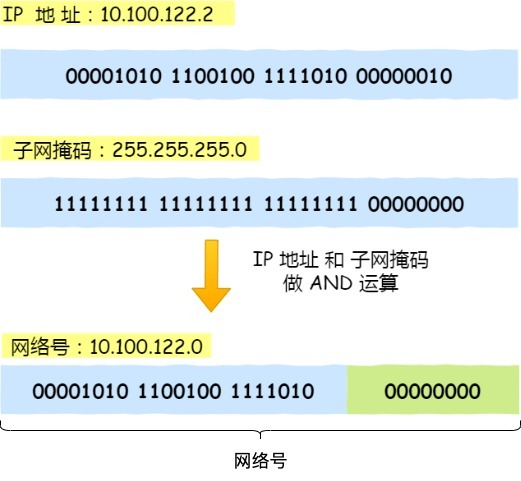
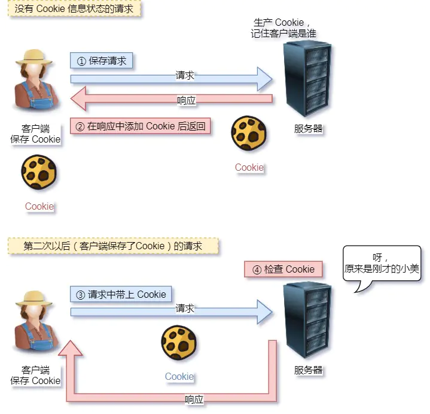

网络
网络模型
对于同一台设备上的进程间通信，有很多种方式，比如有管道、消息队列、共享内存、信号等方式，而对于不同设备上的进程间通信，就需要网络通信，而设备是多样性的，所以要兼容多种多样的设备，就协商出了一套通用的网络协议。
这个网络协议是分层的，每一层都有各自的作用和职责，接下来就根据「 TCP/IP 网络模型」分别对每一层进行介绍。
应用层
最上层的，也是我们能直接接触到的就是应用层（Application Layer），我们电脑或手机使用的应用软件都是在应用层实现。那么，当两个不同设备的应用需要通信的时候，应用就把应用数据传给下一层，也就是传输层。
所以，应用层只需要专注于为用户提供应用功能，比如 HTTP、FTP、Telnet、DNS、SMTP等。
应用层是不用去关心数据是如何传输的，就类似于，我们寄快递的时候，只需要把包裹交给快递员，由他负责运输快递，我们不需要关心快递是如何被运输的。
而且应用层是工作在操作系统中的用户态，传输层及以下则工作在内核态。
传输层
应用层的数据包会传给传输层，传输层（Transport Layer）是为应用层提供网络支持的。

在传输层会有两个传输协议，分别是 TCP 和 UDP。
TCP 的全称叫传输控制协议（Transmission Control Protocol），大部分应用使用的正是 TCP 传输层协议，比如 HTTP 应用层协议。TCP 相比 UDP 多了很多特性，比如流量控制、超时重传、拥塞控制等，这些都是为了保证数据包能可靠地传输给对方。
UDP 相对来说就很简单，简单到只负责发送数据包，不保证数据包是否能抵达对方，但它实时性相对更好，传输效率也高。当然，UDP 也可以实现可靠传输，把 TCP 的特性在应用层上实现就可以，不过要实现一个商用的可靠 UDP 传输协议，也不是一件简单的事情。
应用需要传输的数据可能会非常大，如果直接传输就不好控制，因此当传输层的数据包大小超过 MSS（TCP 最大报文段长度） ，就要将数据包分块，这样即使中途有一个分块丢失或损坏了，只需要重新发送这一个分块，而不用重新发送整个数据包。在 TCP 协议中，我们把每个分块称为一个 TCP 段（TCP Segment）。

当设备作为接收方时，传输层则要负责把数据包传给应用，但是一台设备上可能会有很多应用在接收或者传输数据，因此需要用一个编号将应用区分开来，这个编号就是端口。
比如 80 端口通常是 Web 服务器用的，22 端口通常是远程登录服务器用的。而对于浏览器（客户端）中的每个标签栏都是一个独立的进程，操作系统会为这些进程分配临时的端口号。
由于传输层的报文中会携带端口号，因此接收方可以识别出该报文是发送给哪个应用。
网络层
传输层可能大家刚接触的时候，会认为它负责将数据从一个设备传输到另一个设备，事实上它并不负责。
实际场景中的网络环节是错综复杂的，中间有各种各样的线路和分叉路口，如果一个设备的数据要传输给另一个设备，就需要在各种各样的路径和节点进行选择，而传输层的设计理念是简单、高效、专注，如果传输层还负责这一块功能就有点违背设计原则了。
也就是说，我们不希望传输层协议处理太多的事情，只需要服务好应用即可，让其作为应用间数据传输的媒介，帮助实现应用到应用的通信，而实际的传输功能就交给下一层，也就是网络层（Internet Layer）。

网络层最常使用的是 IP 协议（Internet Protocol），IP 协议会将传输层的报文作为数据部分，再加上 IP 包头组装成 IP 报文，如果 IP 报文大小超过 MTU（以太网中一般为 1500 字节）就会再次进行分片，得到一个即将发送到网络的 IP 报文。

网络层负责将数据从一个设备传输到另一个设备，世界上那么多设备，又该如何找到对方呢？因此，网络层需要有区分设备的编号。
我们一般用 IP 地址给设备进行编号，对于 IPv4 协议， IP 地址共 32 位，分成了四段（比如，192.168.100.1），每段是 8 位。只有一个单纯的 IP 地址虽然做到了区分设备，但是寻址起来就特别麻烦，全世界那么多台设备，难道一个一个去匹配？这显然不科学。
因此，需要将 IP 地址分成两种意义：
- 一个是网络号，负责标识该 IP 地址是属于哪个「子网」的；
- 一个是主机号，负责标识同一「子网」下的不同主机；
怎么分的呢？这需要配合子网掩码才能算出 IP 地址 的网络号和主机号。
举个例子，比如 10.100.122.0/24，后面的/24表示就是 255.255.255.0 子网掩码，255.255.255.0 二进制是「11111111-11111111-11111111-00000000」，大家数数一共多少个1？不用数了，是 24 个1，为了简化子网掩码的表示，用/24代替255.255.255.0。
知道了子网掩码，该怎么计算出网络地址和主机地址呢？
将 10.100.122.2 和 255.255.255.0 进行按位与运算，就可以得到网络号，如下图：

将 255.255.255.0 取反后与IP地址进行进行按位与运算，就可以得到主机号。
大家可以去搜索下子网掩码计算器，自己改变下「掩码位」的数值，就能体会到子网掩码的作用了。
那么在寻址的过程中，先匹配到相同的网络号（表示要找到同一个子网），才会去找对应的主机。
除了寻址能力， IP 协议还有另一个重要的能力就是路由。实际场景中，两台设备并不是用一条网线连接起来的，而是通过很多网关、路由器、交换机等众多网络设备连接起来的，那么就会形成很多条网络的路径，因此当数据包到达一个网络节点，就需要通过路由算法决定下一步走哪条路径。
路由器寻址工作中，就是要找到目标地址的子网，找到后进而把数据包转发给对应的网络内。

所以，IP 协议的寻址作用是告诉我们去往下一个目的地该朝哪个方向走，路由则是根据「下一个目的地」选择路径。寻址更像在导航，路由更像在操作方向盘。
网络接口层
生成了 IP 头部之后，接下来要交给网络接口层（Link Layer）在 IP 头部的前面加上 MAC 头部，并封装成数据帧（Data frame）发送到网络上。

IP 头部中的接收方 IP 地址表示网络包的目的地，通过这个地址我们就可以判断要将包发到哪里，但在以太网的世界中，这个思路是行不通的。
什么是以太网呢？电脑上的以太网接口，Wi-Fi接口，以太网交换机、路由器上的千兆，万兆以太网口，还有网线，它们都是以太网的组成部分。以太网就是一种在「局域网」内，把附近的设备连接起来，使它们之间可以进行通讯的技术。
以太网在判断网络包目的地时和 IP 的方式不同，因此必须采用相匹配的方式才能在以太网中将包发往目的地，而 MAC 头部就是干这个用的，所以，在以太网进行通讯要用到 MAC 地址。
MAC 头部是以太网使用的头部，它包含了接收方和发送方的 MAC 地址等信息，我们可以通过 ARP 协议获取对方的 MAC 地址。
所以说，网络接口层主要为网络层提供「链路级别」传输的服务，负责在以太网、WiFi 这样的底层网络上发送原始数据包，工作在网卡这个层次，使用 MAC 地址来标识网络上的设备。
总结
综上所述，TCP/IP 网络通常是由上到下分成 4 层，分别是应用层，传输层，网络层和网络接口层。


网络接口层的传输单位是帧（frame），IP 层的传输单位是包（packet），TCP 层的传输单位是段（segment），HTTP 的传输单位则是消息或报文（message）。但这些名词并没有什么本质的区分，可以统称为数据包。
HTTP
概念
HTTP 是超文本传输协议，也就是HyperText Transfer Protocol。
协议
HTTP 是一个用在计算机世界里的协议。它使用计算机能够理解的语言确立了一种计算机之间交流通信的规范（两个以上的参与者），以及相关的各种控制和错误处理方式（行为约定和规范）。
传输
HTTP 协议是一个双向协议。
我们在上网冲浪时，浏览器是请求方 A，百度网站就是应答方 B。双方约定用 HTTP 协议来通信，于是浏览器把请求数据发送给网站，网站再把一些数据返回给浏览器，最后由浏览器渲染在屏幕，就可以看到图片、视频了。
HTTP 是一个在计算机世界里专门用来在两点之间传输数据的约定和规范。
超文本
HTTP 传输的内容是「超文本」。
我们先来理解「文本」，在互联网早期的时候只是简单的字符文字，但现在「文本」的涵义已经可以扩展为图片、视频、压缩包等，在 HTTP 眼里这些都算作「文本」。
再来理解「超文本」，它就是超越了普通文本的文本，它是文字、图片、视频等的混合体，最关键有超链接，能从一个超文本跳转到另外一个超文本。
HTML 就是最常见的超文本了，它本身只是纯文字文件，但内部用很多标签定义了图片、视频等的链接，再经过浏览器的解释，呈现给我们的就是一个文字、有画面的网页了。
OK，经过了对 HTTP 里这三个名词的详细解释，就可以给出比「超文本传输协议」这七个字更准确更有技术含量的答案：
HTTP 是一个在计算机世界里专门在「两点」之间「传输」文字、图片、音频、视频等「超文本」数据的「约定和规范」。
GET和POST
根据 RFC 规范，GET 的语义是从服务器获取指定的资源，这个资源可以是静态的文本、页面、图片视频等。GET 请求的参数位置一般是写在 URL 中，URL 规定只能支持 ASCII，所以 GET 请求的参数只允许 ASCII 字符 ，而且浏览器会对 URL 的长度有限制（HTTP协议本身对 URL长度并没有做任何规定）。
比如，你打开我的文章，浏览器就会发送 GET 请求给服务器，服务器就会返回文章的所有文字及资源。
根据 RFC 规范，POST 的语义是根据请求负荷（报文body）对指定的资源做出处理，具体的处理方式视资源类型而不同。POST 请求携带数据的位置一般是写在报文 body 中，body 中的数据可以是任意格式的数据，只要客户端与服务端协商好即可，而且浏览器不会对 body 大小做限制。
比如，你在我文章底部，敲入了留言后点击「提交」，浏览器就会执行一次 POST 请求，把你的留言文字放进了报文 body 里，然后拼接好 POST 请求头，通过 TCP 协议发送给服务器。
GET 和 POST 方法都是安全和幂等的吗？
先说明下安全和幂等的概念：
- 在 HTTP 协议里，所谓的「安全」是指请求方法不会「破坏」服务器上的资源。
- 所谓的「幂等」，意思是多次执行相同的操作，结果都是「相同」的。
如果从 RFC 规范定义的语义来看：
- GET 方法就是安全且幂等的，因为它是「只读」操作，无论操作多少次，服务器上的数据都是安全的，且每次的结果都是相同的。所以，可以对 GET 请求的数据做缓存，这个缓存可以做到浏览器本身上（彻底避免浏览器发请求），也可以做到代理上（如nginx），而且在浏览器中 GET 请求可以保存为书签。
- POST 因为是「新增或提交数据」的操作，会修改服务器上的资源，所以是不安全的，且多次提交数据就会创建多个资源，所以不是幂等的。所以，浏览器一般不会缓存 POST 请求，也不能把 POST 请求保存为书签。
做个简要的小结。
GET 的语义是请求获取指定的资源。GET 方法是安全、幂等、可被缓存的。
POST 的语义是根据请求负荷（报文主体）对指定的资源做出处理，具体的处理方式视资源类型而不同。POST 不安全，不幂等，（大部分实现）不可缓存。
如果「安全」放入概念是指信息是否会被泄漏的话，虽然 POST 用 body 传输数据，而 GET 用 URL 传输，这样数据会在浏览器地址拦容易看到，但是并不能说 GET 不如 POST 安全的。
因为 HTTP 传输的内容都是明文的，虽然在浏览器地址拦看不到 POST 提交的 body 数据，但是只要抓个包就都能看到了。
所以，要避免传输过程中数据被窃取，就要使用 HTTPS 协议，这样所有 HTTP 的数据都会被加密传输。
HTTP缓存
对于一些具有重复性的 HTTP 请求，比如每次请求得到的数据都一样的，我们可以把这对「请求-响应」的数据都缓存在本地，那么下次就直接读取本地的数据，不必在通过网络获取服务器的响应了，这样的话 HTTP/1.1 的性能肯定肉眼可见的提升。
所以，避免发送 HTTP 请求的方法就是通过缓存技术，HTTP 设计者早在之前就考虑到了这点，因此 HTTP 协议的头部有不少是针对缓存的字段。
HTTP 缓存有两种实现方式，分别是强制缓存和协商缓存。
强制缓存
强缓存指的是只要浏览器判断缓存没有过期，则直接使用浏览器的本地缓存，决定是否使用缓存的主动性在于浏览器这边。
强缓存是利用下面这两个 HTTP 响应头部（Response Header）字段实现的，它们都用来表示资源在客户端缓存的有效期：
Cache-Control， 是一个相对时间；Expires，是一个绝对时间；
如果 HTTP 响应头部同时有 Cache-Control 和 Expires 字段的话，Cache-Control 的优先级高于 Expires 。
Cache-control 选项更多一些，设置更加精细，所以建议使用 Cache-Control 来实现强缓存。具体的实现流程如下：
- 当浏览器第一次请求访问服务器资源时，服务器会在返回这个资源的同时，在 Response 头部加上 Cache-Control，Cache-Control 中设置了过期时间大小；
- 浏览器再次请求访问服务器中的该资源时，会先通过请求资源的时间与 Cache-Control 中设置的过期时间大小，来计算出该资源是否过期，如果没有，则使用该缓存，否则重新请求服务器；
- 服务器再次收到请求后，会再次更新 Response 头部的 Cache-Control。
协商缓存
当我们在浏览器使用开发者工具的时候，你可能会看到过某些请求的响应码是 304，这个是告诉浏览器可以使用本地缓存的资源，通常这种通过服务端告知客户端是否可以使用缓存的方式被称为协商缓存。

上图就是一个协商缓存的过程，所以协商缓存就是与服务端协商之后，通过协商结果来判断是否使用本地缓存。
HTTP特性
到目前为止，HTTP 常见到版本有 HTTP/1.1，HTTP/2.0，HTTP/3.0，不同版本的 HTTP 特性是不一样的。
这里先用 HTTP/1.1 版本给大家介绍。
HTTP/1.1 的优点
HTTP 最突出的优点是「简单、灵活和易于扩展、应用广泛和跨平台」。
1. 简单
HTTP 基本的报文格式就是 header + body，头部信息也是 key-value 简单文本的形式，易于理解，降低了学习和使用的门槛。
2. 灵活和易于扩展
HTTP 协议里的各类请求方法、URI/URL、状态码、头字段等每个组成要求都没有被固定死，都允许开发人员自定义和扩充。
同时 HTTP 由于是工作在应用层（ OSI 第七层），则它下层可以随意变化，比如：
- HTTPS 就是在 HTTP 与 TCP 层之间增加了 SSL/TLS 安全传输层；
- HTTP/1.1 和 HTTP/2.0 传输协议使用的是 TCP 协议，而到了 HTTP/3.0 传输协议改用了 UDP 协议。
3. 应用广泛和跨平台
互联网发展至今，HTTP 的应用范围非常的广泛，从台式机的浏览器到手机上的各种 APP，从看新闻、刷贴吧到购物、理财、吃鸡，HTTP 的应用遍地开花，同时天然具有跨平台的优越性。
HTTP/1.1 的缺点
HTTP 协议里有优缺点一体的双刃剑，分别是「无状态、明文传输」，同时还有一大缺点「不安全」。
1. 无状态双刃剑
无状态的好处，因为服务器不会去记忆 HTTP 的状态，所以不需要额外的资源来记录状态信息，这能减轻服务器的负担，能够把更多的 CPU 和内存用来对外提供服务。
无状态的坏处，既然服务器没有记忆能力，它在完成有关联性的操作时会非常麻烦。
例如登录->添加购物车->下单->结算->支付，这系列操作都要知道用户的身份才行。但服务器不知道这些请求是有关联的，每次都要问一遍身份信息。
这样每操作一次，都要验证信息，这样的购物体验还能愉快吗？别问，问就是酸爽！
对于无状态的问题，解法方案有很多种，其中比较简单的方式用 Cookie 技术。
Cookie 通过在请求和响应报文中写入 Cookie 信息来控制客户端的状态。
相当于，在客户端第一次请求后，服务器会下发一个装有客户信息的「小贴纸」，后续客户端请求服务器的时候，带上「小贴纸」，服务器就能认得了了。

2. 明文传输双刃剑
明文意味着在传输过程中的信息，是可方便阅读的，比如 Wireshark 抓包都可以直接肉眼查看，为我们调试工作带了极大的便利性。
但是这正是这样，HTTP 的所有信息都暴露在了光天化日下，相当于信息裸奔。在传输的漫长的过程中，信息的内容都毫无隐私可言，很容易就能被窃取，如果里面有你的账号密码信息，那你号没了。
3. 不安全
HTTP 比较严重的缺点就是不安全：
- 通信使用明文（不加密），内容可能会被窃听。比如，账号信息容易泄漏，那你号没了。
- 不验证通信方的身份，因此有可能遭遇伪装。比如，访问假的淘宝、拼多多，那你钱没了。
- 无法证明报文的完整性，所以有可能已遭篡改。比如，网页上植入垃圾广告，视觉污染，眼没了。
HTTP 的安全问题，可以用 HTTPS 的方式解决，也就是通过引入 SSL/TLS 层，使得在安全上达到了极致。
HTTP/1.1 的性能
HTTP 协议是基于 TCP/IP，并且使用了「请求 - 应答」的通信模式，所以性能的关键就在这两点里。
1. 长连接
早期 HTTP/1.0 性能上的一个很大的问题，那就是每发起一个请求，都要新建一次 TCP 连接（三次握手），而且是串行请求，做了无谓的 TCP 连接建立和断开，增加了通信开销。
为了解决上述 TCP 连接问题，HTTP/1.1 提出了长连接的通信方式，也叫持久连接。这种方式的好处在于减少了 TCP 连接的重复建立和断开所造成的额外开销，减轻了服务器端的负载。
持久连接的特点是，只要任意一端没有明确提出断开连接，则保持 TCP 连接状态。

当然，如果某个 HTTP 长连接超过一定时间没有任何数据交互，服务端就会主动断开这个连接。
2. 管道网络传输
HTTP/1.1 采用了长连接的方式，这使得管道（pipeline）网络传输成为了可能。
即可在同一个 TCP 连接里面，客户端可以发起多个请求，只要第一个请求发出去了，不必等其回来，就可以发第二个请求出去，可以减少整体的响应时间。
举例来说，客户端需要请求两个资源。以前的做法是，在同一个 TCP 连接里面，先发送 A 请求，然后等待服务器做出回应，收到后再发出 B 请求。那么，管道机制则是允许浏览器同时发出 A 请求和 B 请求，如下图：

但是服务器必须按照接收请求的顺序发送对这些管道化请求的响应。
如果服务端在处理 A 请求时耗时比较长，那么后续的请求的处理都会被阻塞住，这称为「队头堵塞」。
所以，HTTP/1.1 管道解决了请求的队头阻塞，但是没有解决响应的队头阻塞。
3. 队头阻塞
「请求 - 应答」的模式会造成 HTTP 的性能问题。为什么呢？
因为当顺序发送的请求序列中的一个请求因为某种原因被阻塞时，在后面排队的所有请求也一同被阻塞了，会招致客户端一直请求不到数据，这也就是「队头阻塞」，好比上班的路上塞车。

总之 HTTP/1.1 的性能一般般，后续的 HTTP/2 和 HTTP/3 就是在优化 HTTP 的性能。
HTTP 和 HTTPS
区别
- HTTP 是超文本传输协议，信息是明文传输，存在安全风险的问题。HTTPS 则解决 HTTP 不安全的缺陷，在 TCP 和 HTTP 网络层之间加入了 SSL/TLS 安全协议，使得报文能够加密传输。
- HTTP 连接建立相对简单， TCP 三次握手之后便可进行 HTTP 的报文传输。而 HTTPS 在 TCP 三次握手之后，还需进行 SSL/TLS 的握手过程，才可进入加密报文传输。
- 两者的默认端口不一样，HTTP 默认端口号是 80，HTTPS 默认端口号是 443。
- HTTPS 协议需要向 CA（证书权威机构）申请数字证书，来保证服务器的身份是可信的。
HTTPS 解决了 HTTP 的哪些问题
HTTP 由于是明文传输，所以安全上存在以下三个风险：
- 窃听风险，比如通信链路上可以获取通信内容，用户号容易没。
- 篡改风险，比如强制植入垃圾广告，视觉污染，用户眼容易瞎。
- 冒充风险，比如冒充淘宝网站，用户钱容易没。

HTTPS 在 HTTP 与 TCP 层之间加入了 SSL/TLS 协议，可以很好的解决了上述的风险：
- 信息加密：交互信息无法被窃取，但你的号会因为「自身忘记」账号而没。
- 校验机制：无法篡改通信内容，篡改了就不能正常显示，但百度「竞价排名」依然可以搜索垃圾广告。
- 身份证书：证明淘宝是真的淘宝网，但你的钱还是会因为「剁手」而没。
可见，只要自身不做「恶」，SSL/TLS 协议是能保证通信是安全的。
HTTPS 是如何解决上面的三个风险的？
- 混合加密的方式实现信息的机密性，解决了窃听的风险。
- 摘要算法的方式来实现完整性，它能够为数据生成独一无二的「指纹」，指纹用于校验数据的完整性，解决了篡改的风险。
- 将服务器公钥放入到数字证书中，解决了冒充的风险。
1. 混合加密
通过混合加密的方式可以保证信息的机密性，解决了窃听的风险。

HTTPS 采用的是对称加密和非对称加密结合的「混合加密」方式：
- 在通信建立前采用非对称加密的方式交换「会话秘钥」，后续就不再使用非对称加密。
- 在通信过程中全部使用对称加密的「会话秘钥」的方式加密明文数据。
采用「混合加密」的方式的原因：
- 对称加密只使用一个密钥，运算速度快，密钥必须保密，无法做到安全的密钥交换。
- 非对称加密使用两个密钥：公钥和私钥，公钥可以任意分发而私钥保密，解决了密钥交换问题但速度慢。
2. 摘要算法 + 数字签名
为了保证传输的内容不被篡改，我们需要对内容计算出一个「指纹」，然后同内容一起传输给对方。
对方收到后，先是对内容也计算出一个「指纹」，然后跟发送方发送的「指纹」做一个比较，如果「指纹」相同，说明内容没有被篡改，否则就可以判断出内容被篡改了。
那么，在计算机里会用摘要算法（哈希函数）来计算出内容的哈希值，也就是内容的「指纹」，这个哈希值是唯一的，且无法通过哈希值推导出内容。

通过哈希算法可以确保内容不会被篡改，但是并不能保证「内容 + 哈希值」不会被中间人替换，因为这里缺少对客户端收到的消息是否来源于服务端的证明。
举个例子，你想向老师请假，一般来说是要求由家长写一份请假理由并签名，老师才能允许你请假。
但是你有模仿你爸爸字迹的能力，你用你爸爸的字迹写了一份请假理由然后签上你爸爸的名字，老师一看到这个请假条，查看字迹和签名，就误以为是你爸爸写的，就会允许你请假。
那作为老师，要如何避免这种情况发生呢？现实生活中的，可以通过电话或视频来确认是否是由父母发出的请假，但是计算机里可没有这种操作。
那为了避免这种情况，计算机里会用非对称加密算法来解决，共有两个密钥：
- 一个是公钥，这个是可以公开给所有人的；
- 一个是私钥，这个必须由本人管理，不可泄露。
这两个密钥可以双向加解密的，比如可以用公钥加密内容，然后用私钥解密，也可以用私钥加密内容，公钥解密内容。
流程的不同，意味着目的也不相同：
- 公钥加密，私钥解密。这个目的是为了保证内容传输的安全，因为被公钥加密的内容，其他人是无法解密的，只有持有私钥的人，才能解密出实际的内容；
- 私钥加密，公钥解密。这个目的是为了保证消息不会被冒充，因为私钥是不可泄露的，如果公钥能正常解密出私钥加密的内容，就能证明这个消息是来源于持有私钥身份的人发送的。
一般我们不会用非对称加密来加密实际的传输内容，因为非对称加密的计算比较耗费性能的。
所以非对称加密的用途主要在于通过「私钥加密，公钥解密」的方式，来确认消息的身份，我们常说的数字签名算法，就是用的是这种方式，不过私钥加密内容不是内容本身，而是对内容的哈希值加密。

私钥是由服务端保管，然后服务端会向客户端颁发对应的公钥。如果客户端收到的信息，能被公钥解密，就说明该消息是由服务器发送的。
引入了数字签名算法后，你就无法模仿你爸爸的字迹来请假了，你爸爸手上持有着私钥，你老师持有着公钥。
这样只有用你爸爸手上的私钥才对请假条进行「签名」，老师通过公钥看能不能解出这个「签名」，如果能解出并且确认内容的完整性，就能证明是由你爸爸发起的请假条，这样老师才允许你请假，否则老师就不认。
3. 数字证书
前面我们知道：
- 可以通过哈希算法来保证消息的完整性；
- 可以通过数字签名来保证消息的来源可靠性（能确认消息是由持有私钥的一方发送的）；
但是这还远远不够，还缺少身份验证的环节，万一公钥是被伪造的呢？
还是拿请假的例子，虽然你爸爸持有私钥，老师通过是否能用公钥解密来确认这个请假条是不是来源你父亲的。
但是我们还可以自己伪造出一对公私钥啊！
你找了个夜晚，偷偷把老师桌面上和你爸爸配对的公钥，换成了你的公钥，那么下次你在请假的时候，你继续模仿你爸爸的字迹写了个请假条，然后用你的私钥做个了「数字签名」。
但是老师并不知道自己的公钥被你替换过了，所以他还是按照往常一样用公钥解密，由于这个公钥和你的私钥是配对的，老师当然能用这个被替换的公钥解密出来，并且确认了内容的完整性，于是老师就会以为是你父亲写的请假条，又允许你请假了。
好家伙，为了一个请假，真的是斗智斗勇。
后面你的老师和父亲发现了你伪造公私钥的事情后，决定重新商量一个对策来应对你这个臭家伙。
正所谓魔高一丈，道高一尺。
既然伪造公私钥那么随意，所以你爸把他的公钥注册到警察局，警察局用他们自己的私钥对你父亲的公钥做了个数字签名，然后把你爸爸的「个人信息 + 公钥 + 数字签名」打包成一个数字证书，也就是说这个数字证书包含你爸爸的公钥。
这样，你爸爸如果因为家里确实有事要向老师帮你请假的时候，不仅会用自己的私钥对内容进行签名，还会把数字证书给到老师。
老师拿到了数字证书后，首先会去警察局验证这个数字证书是否合法，因为数字证书里有警察局的数字签名，警察局要验证证书合法性的时候，用自己的公钥解密，如果能解密成功，就说明这个数字证书是在警察局注册过的，就认为该数字证书是合法的，然后就会把数字证书里头的公钥（你爸爸的）给到老师。
由于通过警察局验证了数字证书是合法的，那么就能证明这个公钥就是你父亲的，于是老师就可以安心的用这个公钥解密出请假条，如果能解密出，就证明是你爸爸写的请假条。
正是通过了一个权威的机构来证明你爸爸的身份，所以你的伪造公私钥这个小伎俩就没用了。
在计算机里，这个权威的机构就是 CA （数字证书认证机构），将服务器公钥放在数字证书（由数字证书认证机构颁发）中，只要证书是可信的，公钥就是可信的。
数字证书的工作流程，我也画了一张图，方便大家理解：

通过数字证书的方式保证服务器公钥的身份，解决冒充的风险。
HTTPS 是如何建立连接的？其间交互了什么？
SSL/TLS 协议基本流程：
- 客户端向服务器索要并验证服务器的公钥。
- 双方协商生产「会话秘钥」。
- 双方采用「会话秘钥」进行加密通信。
前两步也就是 SSL/TLS 的建立过程，也就是 TLS 握手阶段。
TLS 的「握手阶段」涉及四次通信，使用不同的密钥交换算法，TLS 握手流程也会不一样的，现在常用的密钥交换算法有两种：RSA 算法和 ECDHE 算法。
基于 RSA 算法的 TLS 握手过程比较容易理解，所以这里先用这个给大家展示 TLS 握手过程，如下图：

TLS 协议建立的详细流程：
1. ClientHello
首先，由客户端向服务器发起加密通信请求，也就是 ClientHello 请求。
在这一步，客户端主要向服务器发送以下信息：
（1）客户端支持的 TLS 协议版本，如 TLS 1.2 版本。
（2）客户端生产的随机数（Client Random），后面用于生成「会话秘钥」条件之一。
（3）客户端支持的密码套件列表，如 RSA 加密算法。
2. SeverHello
服务器收到客户端请求后，向客户端发出响应，也就是 SeverHello。服务器回应的内容有如下内容：
（1）确认 TLS 协议版本，如果浏览器不支持，则关闭加密通信。
（2）服务器生产的随机数（Server Random），也是后面用于生产「会话秘钥」条件之一。
（3）确认的密码套件列表，如 RSA 加密算法。
（4）服务器的数字证书。
3.客户端回应
客户端收到服务器的回应之后，首先通过浏览器或者操作系统中的 CA 公钥，确认服务器的数字证书的真实性。
如果证书没有问题，客户端会从数字证书中取出服务器的公钥，然后使用它加密报文，向服务器发送如下信息：
（1）一个随机数（pre-master key）。该随机数会被服务器公钥加密。
（2）加密通信算法改变通知，表示随后的信息都将用「会话秘钥」加密通信。
（3）客户端握手结束通知，表示客户端的握手阶段已经结束。这一项同时把之前所有内容的发生的数据做个摘要，用来供服务端校验。
上面第一项的随机数是整个握手阶段的第三个随机数，会发给服务端，所以这个随机数客户端和服务端都是一样的。
服务器和客户端有了这三个随机数（Client Random、Server Random、pre-master key），接着就用双方协商的加密算法，各自生成本次通信的「会话秘钥」。
4. 服务器的最后回应
服务器收到客户端的第三个随机数（pre-master key）之后，通过协商的加密算法，计算出本次通信的「会话秘钥」。
然后，向客户端发送最后的信息：
（1）加密通信算法改变通知，表示随后的信息都将用「会话秘钥」加密通信。
（2）服务器握手结束通知，表示服务器的握手阶段已经结束。这一项同时把之前所有内容的发生的数据做个摘要，用来供客户端校验。
至此，整个 TLS 的握手阶段全部结束。接下来，客户端与服务器进入加密通信，就完全是使用普通的 HTTP 协议，只不过用「会话秘钥」加密内容。
客户端校验数字证书的流程是怎样的？
接下来，详细说一下实际中数字证书签发和验证流程。
如下图图所示，为数字证书签发和验证流程：

CA 签发证书的过程，如上图左边部分：
- 首先 CA 会把持有者的公钥、用途、颁发者、有效时间等信息打成一个包，然后对这些信息进行 Hash 计算，得到一个 Hash 值；
- 然后 CA 会使用自己的私钥将该 Hash 值加密，生成 Certificate Signature，也就是 CA 对证书做了签名；
- 最后将 Certificate Signature 添加在文件证书上，形成数字证书；
客户端校验服务端的数字证书的过程，如上图右边部分：
- 首先客户端会使用同样的 Hash 算法获取该证书的 Hash 值 H1；
- 通常浏览器和操作系统中集成了 CA 的公钥信息，浏览器收到证书后可以使用 CA 的公钥解密 Certificate Signature 内容，得到一个 Hash 值 H2 ；
- 最后比较 H1 和 H2，如果值相同，则为可信赖的证书，否则则认为证书不可信。
HTTPS 的应用数据如何保证完整性
TLS 在实现上分为握手协议和记录协议两层：
- TLS 握手协议就是我们前面说的 TLS 四次握手的过程，负责协商加密算法和生成对称密钥，后续用此密钥来保护应用程序数据（即 HTTP 数据）；
- TLS 记录协议负责保护应用程序数据并验证其完整性和来源，所以对 HTTP 数据加密是使用记录协议；
TLS 记录协议主要负责消息（HTTP 数据）的压缩，加密及数据的认证，过程如下图：

具体过程如下：
- 首先，消息被分割成多个较短的片段,然后分别对每个片段进行压缩。
- 接下来，经过压缩的片段会被加上消息认证码（MAC 值，这个是通过哈希算法生成的），这是为了保证完整性，并进行数据的认证。通过附加消息认证码的 MAC 值，可以识别出篡改。与此同时，为了防止重放攻击，在计算消息认证码时，还加上了片段的编码。
- 再接下来，经过压缩的片段再加上消息认证码会一起通过对称密码进行加密。
- 最后，上述经过加密的数据再加上由数据类型、版本号、压缩后的长度组成的报头就是最终的报文数据。
记录协议完成后，最终的报文数据将传递到传输控制协议 (TCP) 层进行传输。
HTTPS 一定安全可靠吗
这个问题的场景是这样的：客户端通过浏览器向服务端发起 HTTPS 请求时，被「假基站」转发到了一个「中间人服务器」，于是客户端是和「中间人服务器」完成了 TLS 握手，然后这个「中间人服务器」再与真正的服务端完成 TLS 握手。

具体过程如下：
- 客户端向服务端发起 HTTPS 建立连接请求时，然后被「假基站」转发到了一个「中间人服务器」，接着中间人向服务端发起 HTTPS 建立连接请求，此时客户端与中间人进行 TLS 握手，中间人与服务端进行 TLS 握手；
- 在客户端与中间人进行 TLS 握手过程中，中间人会发送自己的公钥证书给客户端，客户端验证证书的真伪，然后从证书拿到公钥，并生成一个随机数，用公钥加密随机数发送给中间人，中间人使用私钥解密，得到随机数，此时双方都有随机数，然后通过算法生成对称加密密钥（A），后续客户端与中间人通信就用这个对称加密密钥来加密数据了。
- 在中间人与服务端进行 TLS 握手过程中，服务端会发送从 CA 机构签发的公钥证书给中间人，从证书拿到公钥，并生成一个随机数，用公钥加密随机数发送给服务端，服务端使用私钥解密，得到随机数，此时双方都有随机数，然后通过算法生成对称加密密钥（B），后续中间人与服务端通信就用这个对称加密密钥来加密数据了。
- 后续的通信过程中，中间人用对称加密密钥（A）解密客户端的 HTTPS 请求的数据，然后用对称加密密钥（B）加密 HTTPS 请求后，转发给服务端，接着服务端发送 HTTPS 响应数据给中间人，中间人用对称加密密钥（B）解密 HTTPS 响应数据，然后再用对称加密密钥（A）加密后，转发给客户端。
从客户端的角度看，其实并不知道网络中存在中间人服务器这个角色。那么中间人就可以解开浏览器发起的 HTTPS 请求里的数据，也可以解开服务端响应给浏览器的 HTTPS 响应数据。相当于，中间人能够 “偷看” 浏览器与服务端之间的 HTTPS 请求和响应的数据。
但是要发生这种场景是有前提的，前提是用户点击接受了中间人服务器的证书。
中间人服务器与客户端在 TLS 握手过程中，实际上发送了自己伪造的证书给浏览器，而这个伪造的证书是能被浏览器（客户端）识别出是非法的，于是就会提醒用户该证书存在问题。
如果用户执意点击「继续浏览此网站」，相当于用户接受了中间人伪造的证书，那么后续整个 HTTPS 通信都能被中间人监听了。
所以，这其实并不能说 HTTPS 不够安全，毕竟浏览器都已经提示证书有问题了，如果用户坚决要访问，那不能怪 HTTPS ，得怪自己手贱。
另外，如果你的电脑中毒了，被恶意导入了中间人的根证书，那么在验证中间人的证书的时候，由于你操作系统信任了中间人的根证书，那么等同于中间人的证书是合法的，这种情况下，浏览器是不会弹出证书存在问题的风险提醒的。
这其实也不关 HTTPS 的事情，是你电脑中毒了才导致 HTTPS 数据被中间人劫持的。
所以，HTTPS 协议本身到目前为止还是没有任何漏洞的，即使你成功进行中间人攻击，本质上是利用了客户端的漏洞（用户点击继续访问或者被恶意导入伪造的根证书），并不是 HTTPS 不够安全。
为什么抓包工具能截取 HTTPS 数据
很多抓包工具 之所以可以明文看到 HTTPS 数据，工作原理与中间人一致的。
对于 HTTPS 连接来说，中间人要满足以下两点，才能实现真正的明文代理:
- 中间人，作为客户端与真实服务端建立连接这一步不会有问题，因为服务端不会校验客户端的身份；
- 中间人，作为服务端与真实客户端建立连接，这里会有客户端信任服务端的问题，也就是服务端必须有对应域名的私钥；
中间人要拿到私钥只能通过如下方式：
- 去网站服务端拿到私钥；
- 去CA处拿域名签发私钥；
- 自己签发证书，切要被浏览器信任；
不用解释，抓包工具只能使用第三种方式取得中间人的身份。
使用抓包工具进行 HTTPS 抓包的时候，需要在客户端安装 Fiddler 的根证书，这里实际上起认证中心（CA）的作用。
抓包工具能够抓包的关键是客户端会往系统受信任的根证书列表中导入抓包工具生成的证书，而这个证书会被浏览器信任，也就是抓包工具给自己创建了一个认证中心 CA，客户端拿着中间人签发的证书去中间人自己的 CA 去认证，当然认为这个证书是有效的。
如何避免被中间人抓取数据
我们要保证自己电脑的安全，不要被病毒乘虚而入，而且也不要点击任何证书非法的网站，这样 HTTPS 数据就不会被中间人截取到了。
当然，我们还可以通过 HTTPS 双向认证来避免这种问题。
一般我们的 HTTPS 是单向认证，客户端只会验证了服务端的身份，但是服务端并不会验证客户端的身份。

如果用了双向认证方式，不仅客户端会验证服务端的身份，而且服务端也会验证客户端的身份。服务端一旦验证到请求自己的客户端为不可信任的，服务端就拒绝继续通信，客户端如果发现服务端为不可信任的，那么也中止通信。
HTTP/1.1、HTTP/2、HTTP/3 演变
HTTP/1.1 相比 HTTP/1.0 提高了什么性能
HTTP/1.1 相比 HTTP/1.0 性能上的改进：
- 使用长连接的方式改善了 HTTP/1.0 短连接造成的性能开销。
- 支持管道（pipeline）网络传输，只要第一个请求发出去了，不必等其回来，就可以发第二个请求出去，可以减少整体的响应时间。
但 HTTP/1.1 还是有性能瓶颈：
- 请求 / 响应头部（Header）未经压缩就发送，首部信息越多延迟越大。只能压缩
Body的部分； - 发送冗长的首部。每次互相发送相同的首部造成的浪费较多；
- 服务器是按请求的顺序响应的，如果服务器响应慢，会招致客户端一直请求不到数据，也就是队头阻塞；
- 没有请求优先级控制；
- 请求只能从客户端开始，服务器只能被动响应。
HTTP/2 做了什么优化
HTTP/2 协议是基于 HTTPS 的，所以 HTTP/2 的安全性也是有保障的。

那 HTTP/2 相比 HTTP/1.1 性能上的改进：
- 头部压缩
- 二进制格式
- 并发传输
- 服务器主动推送资源
1. 头部压缩
HTTP/2 会压缩头（Header）如果你同时发出多个请求，他们的头是一样的或是相似的，那么，协议会帮你消除重复的部分。
这就是所谓的 HPACK 算法：在客户端和服务器同时维护一张头信息表，所有字段都会存入这个表，生成一个索引号，以后就不发送同样字段了，只发送索引号，这样就提高速度了。
2. 二进制格式
HTTP/2 不再像 HTTP/1.1 里的纯文本形式的报文，而是全面采用了二进制格式，头信息和数据体都是二进制，并且统称为帧（frame）：头信息帧（Headers Frame）和数据帧（Data Frame）。
这样虽然对人不友好，但是对计算机非常友好，因为计算机只懂二进制，那么收到报文后，无需再将明文的报文转成二进制，而是直接解析二进制报文，这增加了数据传输的效率。
3. 并发传输
我们都知道 HTTP/1.1 的实现是基于请求-响应模型的。同一个连接中，HTTP 完成一个事务（请求与响应），才能处理下一个事务，也就是说在发出请求等待响应的过程中，是没办法做其他事情的，如果响应迟迟不来，那么后续的请求是无法发送的，也造成了队头阻塞的问题。
而 HTTP/2 就很牛逼了，引出了 Stream 概念，多个 Stream 复用在一条 TCP 连接。
从上图可以看到，1 个 TCP 连接包含多个 Stream，Stream 里可以包含 1 个或多个 Message，Message 对应 HTTP/1 中的请求或响应，由 HTTP 头部和包体构成。Message 里包含一条或者多个 Frame，Frame 是 HTTP/2 最小单位，以二进制压缩格式存放 HTTP/1 中的内容（头部和包体）。
针对不同的 HTTP 请求用独一无二的 Stream ID 来区分，接收端可以通过 Stream ID 有序组装成 HTTP 消息，不同 Stream 的帧是可以乱序发送的，因此可以并发不同的 Stream ，也就是 HTTP/2 可以并行交错地发送请求和响应。
4、服务器推送
HTTP/2 还在一定程度上改善了传统的「请求 - 应答」工作模式，服务端不再是被动地响应，可以主动向客户端发送消息。
客户端和服务器双方都可以建立 Stream， Stream ID 也是有区别的，客户端建立的 Stream 必须是奇数号，而服务器建立的 Stream 必须是偶数号。
再比如，客户端通过 HTTP/1.1 请求从服务器那获取到了 HTML 文件，而 HTML 可能还需要依赖 CSS 来渲染页面，这时客户端还要再发起获取 CSS 文件的请求，需要两次消息往返，如下图左边部分：
如上图右边部分，在 HTTP/2 中，客户端在访问 HTML 时，服务器可以直接主动推送 CSS 文件，减少了消息传递的次数。
HTTP/2 有什么缺陷？
HTTP/2 通过 Stream 的并发能力，解决了 HTTP/1 队头阻塞的问题，看似很完美了，但是 HTTP/2 还是存在“队头阻塞”的问题，只不过问题不是在 HTTP 这一层面，而是在 TCP 这一层。
HTTP/2 是基于 TCP 协议来传输数据的，TCP 是字节流协议，TCP 层必须保证收到的字节数据是完整且连续的，这样内核才会将缓冲区里的数据返回给 HTTP 应用，那么当「前 1 个字节数据」没有到达时，后收到的字节数据只能存放在内核缓冲区里，只有等到这 1 个字节数据到达时，HTTP/2 应用层才能从内核中拿到数据，这就是 HTTP/2 队头阻塞问题。

图中发送方发送了很多个 packet，每个 packet 都有自己的序号，你可以认为是 TCP 的序列号，其中 packet 3 在网络中丢失了，即使 packet 4-6 被接收方收到后，由于内核中的 TCP 数据不是连续的，于是接收方的应用层就无法从内核中读取到，只有等到 packet 3 重传后，接收方的应用层才可以从内核中读取到数据，这就是 HTTP/2 的队头阻塞问题，是在 TCP 层面发生的。
所以，一旦发生了丢包现象，就会触发 TCP 的重传机制，这样在一个 TCP 连接中的所有的 HTTP 请求都必须等待这个丢了的包被重传回来。
HTTP/3 做了哪些优化
前面我们知道了 HTTP/1.1 和 HTTP/2 都有队头阻塞的问题：
- HTTP/1.1 中的管道（ pipeline）虽然解决了请求的队头阻塞，但是没有解决响应的队头阻塞，因为服务端需要按顺序响应收到的请求，如果服务端处理某个请求消耗的时间比较长，那么只能等响应完这个请求后， 才能处理下一个请求，这属于 HTTP 层队头阻塞。
- HTTP/2 虽然通过多个请求复用一个 TCP 连接解决了 HTTP 的队头阻塞 ，但是一旦发生丢包，就会阻塞住所有的 HTTP 请求，这属于 TCP 层队头阻塞。
HTTP/2 队头阻塞的问题是因为 TCP，所以 HTTP/3 把 HTTP 下层的 TCP 协议改成了 UDP！

UDP 发送是不管顺序，也不管丢包的，所以不会出现像 HTTP/2 队头阻塞的问题。大家都知道 UDP 是不可靠传输的，但基于 UDP 的 QUIC 协议 可以实现类似 TCP 的可靠性传输。
QUIC 有以下 3 个特点。
- 无队头阻塞
- 更快的连接建立
- 连接迁移
1、无队头阻塞
QUIC 协议也有类似 HTTP/2 Stream 与多路复用的概念，也是可以在同一条连接上并发传输多个 Stream，Stream 可以认为就是一条 HTTP 请求。
QUIC 有自己的一套机制可以保证传输的可靠性的。当某个流发生丢包时，只会阻塞这个流，其他流不会受到影响，因此不存在队头阻塞问题。这与 HTTP/2 不同，HTTP/2 只要某个流中的数据包丢失了，其他流也会因此受影响。
所以，QUIC 连接上的多个 Stream 之间并没有依赖，都是独立的，某个流发生丢包了，只会影响该流，其他流不受影响。
2、更快的连接建立
对于 HTTP/1 和 HTTP/2 协议，TCP 和 TLS 是分层的，分别属于内核实现的传输层、openssl 库实现的表示层，因此它们难以合并在一起，需要分批次来握手，先 TCP 握手，再 TLS 握手。
HTTP/3 在传输数据前虽然需要 QUIC 协议握手，但是这个握手过程只需要 1 RTT，握手的目的是为确认双方的「连接 ID」，连接迁移就是基于连接 ID 实现的。
但是 HTTP/3 的 QUIC 协议并不是与 TLS 分层，而是 QUIC 内部包含了 TLS，它在自己的帧会携带 TLS 里的“记录”，再加上 QUIC 使用的是 TLS/1.3，因此仅需 1 个 RTT 就可以「同时」完成建立连接与密钥协商，如下图：

甚至，在第二次连接的时候，应用数据包可以和 QUIC 握手信息（连接信息 + TLS 信息）一起发送，达到 0-RTT 的效果。
3、连接迁移
基于 TCP 传输协议的 HTTP 协议，由于是通过四元组（源 IP、源端口、目的 IP、目的端口）确定一条 TCP 连接。

那么当移动设备的网络从 4G 切换到 WIFI 时，意味着 IP 地址变化了，那么就必须要断开连接，然后重新建立连接。而建立连接的过程包含 TCP 三次握手和 TLS 四次握手的时延，以及 TCP 慢启动的减速过程，给用户的感觉就是网络突然卡顿了一下，因此连接的迁移成本是很高的。
而 QUIC 协议没有用四元组的方式来“绑定”连接，而是通过连接 ID 来标记通信的两个端点，客户端和服务器可以各自选择一组 ID 来标记自己，因此即使移动设备的网络变化后，导致 IP 地址变化了，只要仍保有上下文信息（比如连接 ID、TLS 密钥等），就可以“无缝”地复用原连接，消除重连的成本，没有丝毫卡顿感，达到了连接迁移的功能。
所以， QUIC 是一个在 UDP 之上的伪 TCP + TLS + HTTP/2 的多路复用的协议。
QUIC 是新协议，对于很多网络设备，根本不知道什么是 QUIC，只会当做 UDP，这样会出现新的问题，因为有的网络设备是会丢掉 UDP 包的，而 QUIC 是基于 UDP 实现的，那么如果网络设备无法识别这个是 QUIC 包，那么就会当作 UDP包，然后被丢弃。
HTTP/3 现在普及的进度非常的缓慢，不知道未来 UDP 是否能够逆袭 TCP。
RPC
既然有 HTTP 协议，为什么还要有 RPC
作为一个程序员，假设我们需要在 A 电脑的进程发一段数据到 B 电脑的进程，我们一般会在代码里使用 Socket 进行编程。
这时候，我们可选项一般也就 TCP 和 UDP 二选一。TCP 可靠，UDP 不可靠。除非是马总这种神级程序员（早期 QQ 大量使用 UDP），否则，只要稍微对可靠性有些要求，普通人一般无脑选 TCP 就对了。
类似下面这样。
1 | fd = socket(AF_INET,SOCK_STREAM,0); |
其中 SOCK_STREAM，是指使用字节流传输数据，说白了就是 TCP 协议。
在定义了 Socket 之后，我们就可以愉快的对这个 Socket 进行操作，比如用 bind() 绑定 IP 端口，用 connect() 发起建连。
在连接建立之后，我们就可以使用 send() 发送数据，recv() 接收数据。
光这样一个纯裸的 TCP 连接，就可以做到收发数据了，那是不是就够了？
不行，这么用会有问题。
使用纯裸 TCP 会有什么问题？
TCP 是有三个特点，面向连接、可靠、基于字节流。
字节流可以理解为一个双向的通道里流淌的数据，这个数据其实就是我们常说的二进制数据，简单来说就是一大堆 01 串。纯裸 TCP 收发的这些 01 串之间是没有任何边界的，你根本不知道到哪个地方才算一条完整消息。

正因为这个没有任何边界的特点，所以当我们选择使用 TCP 发送”夏洛”和”特烦恼”的时候，接收端收到的就是”夏洛特烦恼”，这时候接收端没发区分你是想要表达”夏洛”+”特烦恼”还是”夏洛特”+”烦恼”。
这就是所谓的粘包问题。
说这个的目的是为了告诉大家，纯裸 TCP 是不能直接拿来用的，你需要在这个基础上加入一些自定义的规则，用于区分消息边界。
于是我们会把每条要发送的数据都包装一下，比如加入消息头，消息头里写清楚一个完整的包长度是多少，根据这个长度可以继续接收数据，截取出来后它们就是我们真正要传输的消息体。
而这里头提到的消息头，还可以放各种东西，比如消息体是否被压缩过和消息体格式之类的，只要上下游都约定好了，互相都认就可以了，这就是所谓的协议。
每个使用 TCP 的项目都可能会定义一套类似这样的协议解析标准，他们可能有区别，但原理都类似。
于是基于 TCP，就衍生了非常多的协议，比如 HTTP 和 RPC。
HTTP 和 RPC
网络的分层图：

TCP 是传输层的协议，而基于 TCP 造出来的 HTTP 和各类 RPC 协议，它们都只是定义了不同消息格式的应用层协议而已。
HTTP 协议（Hyper Text Transfer Protocol），又叫做超文本传输协议。我们用的比较多，平时上网在浏览器上敲个网址就能访问网页，这里用到的就是 HTTP 协议。
而 RPC（Remote Procedure Call），又叫做远程过程调用。它本身并不是一个具体的协议，而是一种调用方式。
举个例子，我们平时调用一个本地方法就像下面这样。
1 | res = localFunc(req) |
如果现在这不是个本地方法，而是个远端服务器暴露出来的一个方法 remoteFunc，如果我们还能像调用本地方法那样去调用它，这样就可以屏蔽掉一些网络细节，用起来更方便，岂不美哉？
1 | res = remoteFunc(req) |
基于这个思路，大佬们造出了非常多款式的 RPC 协议，比如比较有名的gRPC，thrift。
值得注意的是，虽然大部分 RPC 协议底层使用 TCP，但实际上它们不一定非得使用 TCP，改用 UDP 或者 HTTP，其实也可以做到类似的功能。
原因
其实，TCP 是70年代出来的协议，而 HTTP 是 90 年代才开始流行的。而直接使用裸 TCP 会有问题，可想而知，这中间这么多年有多少自定义的协议，而这里面就有80年代出来的 RPC。
所以我们该问的不是既然有 HTTP 协议为什么要有 RPC，而是为什么有 RPC 还要有 HTTP 协议。
现在电脑上装的各种联网软件，比如 xx管家，xx卫士，它们都作为客户端（Client）需要跟服务端（Server）建立连接收发消息，此时都会用到应用层协议，在这种 Client/Server (C/S) 架构下，它们可以使用自家造的 RPC 协议，因为它只管连自己公司的服务器就 ok 了。
但有个软件不同，浏览器（Browser），不管是 Chrome 还是 IE，它们不仅要能访问自家公司的服务器（Server），还需要访问其他公司的网站服务器，因此它们需要有个统一的标准，不然大家没法交流。于是，HTTP 就是那个时代用于统一 Browser/Server (B/S) 的协议。
也就是说在多年以前，HTTP 主要用于 B/S 架构，而 RPC 更多用于 C/S 架构。但现在其实已经没分那么清了，B/S 和 C/S 在慢慢融合。很多软件同时支持多端，比如某度云盘，既要支持网页版，还要支持手机端和 PC 端，如果通信协议都用 HTTP 的话，那服务器只用同一套就够了。而 RPC 就开始退居幕后，一般用于公司内部集群里，各个微服务之间的通讯。
那这么说的话，都用 HTTP 得了，还用什么 RPC？
仿佛又回到了文章开头的样子，那这就要从它们之间的区别开始说起。
区别
服务发现
首先要向某个服务器发起请求，你得先建立连接，而建立连接的前提是，你得知道 IP 地址和端口。这个找到服务对应的 IP 端口的过程，其实就是服务发现。
在 HTTP 中，你知道服务的域名，就可以通过 DNS 服务去解析得到它背后的 IP 地址，默认 80 端口。
而 RPC 的话，就有些区别，一般会有专门的中间服务去保存服务名和IP信息，比如 Consul 或者 Etcd，甚至是 Redis。想要访问某个服务，就去这些中间服务去获得 IP 和端口信息。由于 DNS 也是服务发现的一种，所以也有基于 DNS 去做服务发现的组件，比如CoreDNS。
可以看出服务发现这一块，两者是有些区别，但不太能分高低。
底层连接形式
以主流的 HTTP/1.1 协议为例，其默认在建立底层 TCP 连接之后会一直保持这个连接（Keep Alive），之后的请求和响应都会复用这条连接。
而 RPC 协议，也跟 HTTP 类似，也是通过建立 TCP 长链接进行数据交互，但不同的地方在于，RPC 协议一般还会再建个连接池，在请求量大的时候，建立多条连接放在池内，要发数据的时候就从池里取一条连接出来，用完放回去，下次再复用，可以说非常环保。

由于连接池有利于提升网络请求性能，所以不少编程语言的网络库里都会给 HTTP 加个连接池，比如 Go 就是这么干的。
可以看出这一块两者也没太大区别，所以也不是关键。
传输的内容
基于 TCP 传输的消息，说到底，无非都是消息头 Header 和消息体 Body。
Header 是用于标记一些特殊信息，其中最重要的是消息体长度。
Body 则是放我们真正需要传输的内容，而这些内容只能是二进制 01 串，毕竟计算机只认识这玩意。所以 TCP 传字符串和数字都问题不大，因为字符串可以转成编码再变成 01 串，而数字本身也能直接转为二进制。但结构体呢，我们得想个办法将它也转为二进制 01 串，这样的方案现在也有很多现成的，比如 Json，Protobuf。
这个将结构体转为二进制数组的过程就叫序列化，反过来将二进制数组复原成结构体的过程叫反序列化。
对于主流的 HTTP/1.1，虽然它现在叫超文本协议，支持音频视频，但 HTTP 设计初是用于做网页文本展示的，所以它传的内容以字符串为主。Header 和 Body 都是如此。在 Body 这块，它使用 Json 来序列化结构体数据。
这里面的内容非常多的冗余，显得非常啰嗦。最明显的，像 Header 里的那些信息，其实如果我们约定好头部的第几位是 Content-Type，就不需要每次都真的把”Content-Type”这个字段都传过来，类似的情况其实在 body 的 Json 结构里也特别明显。
而 RPC，因为它定制化程度更高，可以采用体积更小的 Protobuf 或其他序列化协议去保存结构体数据，同时也不需要像 HTTP 那样考虑各种浏览器行为，比如 302 重定向跳转啥的。因此性能也会更好一些，这也是在公司内部微服务中抛弃 HTTP，选择使用 RPC 的最主要原因。


当然上面说的 HTTP，其实特指的是现在主流使用的 HTTP/1.1，HTTP/2 在前者的基础上做了很多改进，所以性能可能比很多 RPC 协议还要好，甚至连 gRPC 底层都直接用的 HTTP/2。
总结
- 纯裸 TCP 是能收发数据，但它是个无边界的数据流，上层需要定义消息格式用于定义消息边界。于是就有了各种协议，HTTP 和各类 RPC 协议就是在 TCP 之上定义的应用层协议。
- RPC 本质上不算是协议，而是一种调用方式，而像 gRPC 和 Thrift 这样的具体实现，才是协议，它们是实现了 RPC 调用的协议。目的是希望程序员能像调用本地方法那样去调用远端的服务方法。同时 RPC 有很多种实现方式，不一定非得基于 TCP 协议。
- 从发展历史来说，HTTP 主要用于 B/S 架构，而 RPC 更多用于 C/S 架构。但现在其实已经没分那么清了，B/S 和 C/S 在慢慢融合。很多软件同时支持多端，所以对外一般用 HTTP 协议，而内部集群的微服务之间则采用 RPC 协议进行通讯。
- RPC 其实比 HTTP 出现的要早，且比目前主流的 HTTP/1.1 性能要更好，所以大部分公司内部都还在使用 RPC。
- HTTP/2.0 在 HTTP/1.1 的基础上做了优化，性能可能比很多 RPC 协议都要好，但由于是这几年才出来的，所以也不太可能取代掉 RPC。
websocket
既然有 HTTP 协议，为什么还要有 WebSocket
平时我们打开网页，比如购物网站某宝。都是点一下「列表商品」，跳转一下网页就到了「商品详情」。
从 HTTP 协议的角度来看，就是点一下网页上的某个按钮，前端发一次 HTTP 请求，网站返回一次 HTTP 响应。这种由客户端主动请求，服务器响应的方式也满足大部分网页的功能场景。
但有没有发现，这种情况下，服务器从来就「不会主动」给客户端发一次消息。
那么服务器主动发消息给客户端的场景，是怎么做到的？
HTTP 轮询
其实问题的痛点在于，怎么样才能在用户不做任何操作的情况下，网页能收到消息并发生变更。
最常见的解决方案是，网页的前端代码里不断定时发 HTTP 请求到服务器，服务器收到请求后给客户端响应消息。
这其实时一种「伪」服务器推的形式。
它其实并不是服务器主动发消息到客户端，而是客户端自己不断偷偷请求服务器，只是用户无感知而已。
用这种方式的场景也有很多，最常见的就是扫码登录。
比如，某信公众号平台，登录页面二维码出现之后，前端网页根本不知道用户扫没扫，于是不断去向后端服务器询问，看有没有人扫过这个码。而且是以大概 1 到 2 秒的间隔去不断发出请求，这样可以保证用户在扫码后能在 1 到 2 秒内得到及时的反馈，不至于等太久。
但这样，会有两个比较明显的问题：
- 当你打开 F12 页面时，你会发现满屏的 HTTP 请求。虽然很小，但这其实也消耗带宽，同时也会增加下游服务器的负担。
- 最坏情况下，用户在扫码后，需要等个 1~2 秒，正好才触发下一次 HTTP 请求，然后才跳转页面，用户会感到明显的卡顿。
使用起来的体验就是，二维码出现后，手机扫一扫，然后在手机上点个确认，这时候卡顿等个 1~2 秒，页面才跳转。
有没有更好的解决方案？
有，而且实现起来成本还非常低。
长轮询
我们知道，HTTP 请求发出后，一般会给服务器留一定的时间做响应，比如 3 秒，规定时间内没返回，就认为是超时。
如果我们的 HTTP 请求将超时设置的很大，比如 30 秒，在这 30 秒内只要服务器收到了扫码请求，就立马返回给客户端网页。如果超时，那就立马发起下一次请求。
这样就减少了 HTTP 请求的个数，并且由于大部分情况下，用户都会在某个 30 秒的区间内做扫码操作，所以响应也是及时的。

像这种发起一个请求，在较长时间内等待服务器响应的机制，就是所谓的长轮询机制。我们常用的消息队列 RocketMQ 中，消费者去取数据时，也用到了这种方式。
像这种，在用户不感知的情况下，服务器将数据推送给浏览器的技术，就是所谓的服务器推送技术，它还有个毫不沾边的英文名，comet 技术，大家听过就好。
上面提到的两种解决方案（不断轮询和长轮询），本质上，其实还是客户端主动去取数据。
对于像扫码登录这样的简单场景还能用用。但如果是网页游戏呢，游戏一般会有大量的数据需要从服务器主动推送到客户端。
这就得说下 WebSocket 了。
websocket 是什么
我们知道 TCP 连接的两端，同一时间里，双方都可以主动向对方发送数据。这就是所谓的全双工。
而现在使用最广泛的HTTP/1.1，也是基于TCP协议的，同一时间里，客户端和服务器只能有一方主动发数据，这就是所谓的半双工。
也就是说，好好的全双工 TCP，被 HTTP/1.1 用成了半双工。
为什么？
这是由于 HTTP 协议设计之初，考虑的是看看网页文本的场景，能做到客户端发起请求再由服务器响应，就够了，根本就没考虑网页游戏这种，客户端和服务器之间都要互相主动发大量数据的场景。
所以，为了更好的支持这样的场景，我们需要另外一个基于TCP的新协议。
于是新的应用层协议WebSocket就被设计出来了。
大家别被这个名字给带偏了。虽然名字带了个socket，但其实 socket 和 WebSocket 之间，就跟雷峰和雷峰塔一样，二者接近毫无关系。
怎么建立WebSocket连接
我们平时刷网页，一般都是在浏览器上刷的，一会刷刷图文，这时候用的是 HTTP 协议，一会打开网页游戏，这时候就得切换成我们新介绍的 WebSocket 协议。
为了兼容这些使用场景。浏览器在 TCP 三次握手建立连接之后，都统一使用 HTTP 协议先进行一次通信。
- 如果此时是普通的 HTTP 请求，那后续双方就还是老样子继续用普通 HTTP 协议进行交互，这点没啥疑问。
- 如果这时候是想建立 WebSocket 连接，就会在 HTTP 请求里带上一些特殊的header 头，如下：
1 | Connection: Upgrade |
这些 header 头的意思是，浏览器想升级协议（Connection: Upgrade），并且想升级成 WebSocket 协议（Upgrade: WebSocket）。同时带上一段随机生成的 base64 码（Sec-WebSocket-Key），发给服务器。
如果服务器正好支持升级成 WebSocket 协议。就会走 WebSocket 握手流程，同时根据客户端生成的 base64 码，用某个公开的算法变成另一段字符串，放在 HTTP 响应的 Sec-WebSocket-Accept 头里，同时带上101状态码，发回给浏览器。HTTP 的响应如下：
1 | HTTP/1.1 101 Switching Protocols\r\n |
HTTP 状态码=200（正常响应）的情况，大家见得多了。101 确实不常见，它其实是指协议切换。
之后，浏览器也用同样的公开算法将base64码转成另一段字符串，如果这段字符串跟服务器传回来的字符串一致，那验证通过。
就这样经历了一来一回两次 HTTP 握手，WebSocket就建立完成了，后续双方就可以使用 webscoket 的数据格式进行通信了。
使用场景
WebSocket完美继承了 TCP 协议的全双工能力，并且还贴心的提供了解决粘包的方案。
它适用于需要服务器和客户端（浏览器）频繁交互的大部分场景，比如网页/小程序游戏，网页聊天室，以及一些类似飞书这样的网页协同办公软件。
回到文章开头的问题，在使用 WebSocket 协议的网页游戏里，怪物移动以及攻击玩家的行为是服务器逻辑产生的，对玩家产生的伤害等数据，都需要由服务器主动发送给客户端，客户端获得数据后展示对应的效果。
总结
- TCP 协议本身是全双工的，但我们最常用的 HTTP/1.1，虽然是基于 TCP 的协议，但它是半双工的，对于大部分需要服务器主动推送数据到客户端的场景，都不太友好，因此我们需要使用支持全双工的 WebSocket 协议。
- 在 HTTP/1.1 里，只要客户端不问，服务端就不答。基于这样的特点，对于登录页面这样的简单场景，可以使用定时轮询或者长轮询的方式实现服务器推送(comet)的效果。
- 对于客户端和服务端之间需要频繁交互的复杂场景，比如网页游戏，都可以考虑使用 WebSocket 协议。
- WebSocket 和 socket 几乎没有任何关系，只是叫法相似。
- 正因为各个浏览器都支持 HTTP协 议，所以 WebSocket 会先利用HTTP协议加上一些特殊的 header 头进行握手升级操作，升级成功后就跟 HTTP 没有任何关系了，之后就用 WebSocket 的数据格式进行收发数据。
TCP
基本认识
头格式

序列号：在建立连接时由计算机生成的随机数作为其初始值，通过 SYN 包传给接收端主机，每发送一次数据，就「累加」一次该「数据字节数」的大小。用来解决网络包乱序问题。
确认应答号：指下一次「期望」收到的数据的序列号，发送端收到这个确认应答以后可以认为在这个序号以前的数据都已经被正常接收。用来解决丢包的问题。
控制位：
- ACK：该位为
1时，「确认应答」的字段变为有效，TCP 规定除了最初建立连接时的SYN包之外该位必须设置为1。 - RST：该位为
1时，表示 TCP 连接中出现异常必须强制断开连接。 - SYN：该位为
1时，表示希望建立连接，并在其「序列号」的字段进行序列号初始值的设定。 - FIN：该位为
1时，表示今后不会再有数据发送，希望断开连接。当通信结束希望断开连接时，通信双方的主机之间就可以相互交换FIN位为 1 的 TCP 段。
为什么需要 TCP 协议
IP 层是「不可靠」的，它不保证网络包的交付、不保证网络包的按序交付、也不保证网络包中的数据的完整性。
如果需要保障网络数据包的可靠性，那么就需要由上层（传输层）的 TCP 协议来负责。
因为 TCP 是一个工作在传输层的可靠数据传输的服务，它能确保接收端接收的网络包是无损坏、无间隔、非冗余和按序的。
什么是 TCP
TCP 是面向连接的、可靠的、基于字节流的传输层通信协议。
- 面向连接：一定是「一对一」才能连接，不能像 UDP 协议可以一个主机同时向多个主机发送消息，也就是一对多是无法做到的；
- 可靠的：无论的网络链路中出现了怎样的链路变化，TCP 都可以保证一个报文一定能够到达接收端；
- 字节流：用户消息通过 TCP 协议传输时，消息可能会被操作系统「分组」成多个的 TCP 报文，如果接收方的程序如果不知道「消息的边界」，是无法读出一个有效的用户消息的。并且 TCP 报文是「有序的」，当「前一个」TCP 报文没有收到的时候，即使它先收到了后面的 TCP 报文，那么也不能扔给应用层去处理，同时对「重复」的 TCP 报文会自动丢弃。
如何唯一确定一个 TCP 连接
TCP 四元组可以唯一的确定一个连接，四元组包括如下：
- 源地址
- 源端口
- 目的地址
- 目的端口
源地址和目的地址的字段（32 位）是在 IP 头部中，作用是通过 IP 协议发送报文给对方主机。
源端口和目的端口的字段（16 位）是在 TCP 头部中，作用是告诉 TCP 协议应该把报文发给哪个进程。
有一个 IP 的服务端监听了一个端口，它的 TCP 的最大连接数是多少
对 IPv4，客户端的 IP 数最多为 2 的 32 次方，客户端的端口数最多为 2 的 16 次方，也就是服务端单机最大 TCP 连接数，约为 2 的 48 次方。
当然，服务端最大并发 TCP 连接数远不能达到理论上限，会受以下因素影响：
文件描述符限制
，每个 TCP 连接都是一个文件，如果文件描述符被占满了，会发生 Too many open files。Linux 对可打开的文件描述符的数量分别作了三个方面的限制：
- 系统级：当前系统可打开的最大数量，通过
cat /proc/sys/fs/file-max查看； - 用户级：指定用户可打开的最大数量，通过
cat /etc/security/limits.conf查看； - 进程级：单个进程可打开的最大数量，通过
cat /proc/sys/fs/nr_open查看；
- 系统级：当前系统可打开的最大数量，通过
内存限制，每个 TCP 连接都要占用一定内存，操作系统的内存是有限的，如果内存资源被占满后，会发生 OOM。
UDP 和 TCP 有什么区别呢？分别的应用场景是？
UDP 不提供复杂的控制机制，利用 IP 提供面向「无连接」的通信服务。
UDP 协议很简单，头部只有 8 个字节（64 位），UDP 的头部格式如下：

- 目标和源端口：主要是告诉 UDP 协议应该把报文发给哪个进程。
- 包长度：该字段保存了 UDP 首部的长度跟数据的长度之和。
- 校验和：校验和是为了提供可靠的 UDP 首部和数据而设计，防止收到在网络传输中受损的 UDP 包。
区别
1. 连接
- TCP 是面向连接的传输层协议，传输数据前先要建立连接。
- UDP 是不需要连接，即刻传输数据。
2. 服务对象
- TCP 是一对一的两点服务，即一条连接只有两个端点。
- UDP 支持一对一、一对多、多对多的交互通信
3. 可靠性
- TCP 是可靠交付数据的，数据可以无差错、不丢失、不重复、按序到达。
- UDP 是尽最大努力交付，不保证可靠交付数据。但是我们可以基于 UDP 传输协议实现一个可靠的传输协议，比如 QUIC 协议，具体可以参见这篇文章：如何基于 UDP 协议实现可靠传输？
4. 拥塞控制、流量控制
- TCP 有拥塞控制和流量控制机制，保证数据传输的安全性。
- UDP 则没有，即使网络非常拥堵了，也不会影响 UDP 的发送速率。
5. 首部开销
- TCP 首部长度较长，会有一定的开销，首部在没有使用「选项」字段时是
20个字节，如果使用了「选项」字段则会变长的。 - UDP 首部只有 8 个字节，并且是固定不变的，开销较小。
6. 传输方式
- TCP 是流式传输，没有边界，但保证顺序和可靠。
- UDP 是一个包一个包的发送，是有边界的，但可能会丢包和乱序。
7. 分片不同
- TCP 的数据大小如果大于 MSS 大小，则会在传输层进行分片，目标主机收到后，也同样在传输层组装 TCP 数据包，如果中途丢失了一个分片，只需要传输丢失的这个分片。
- UDP 的数据大小如果大于 MTU 大小，则会在 IP 层进行分片，目标主机收到后，在 IP 层组装完数据，接着再传给传输层。
应用场景
由于 TCP 是面向连接，能保证数据的可靠性交付，因此经常用于：
FTP文件传输；- HTTP / HTTPS；
由于 UDP 面向无连接，它可以随时发送数据，再加上 UDP 本身的处理既简单又高效，因此经常用于：
- 包总量较少的通信，如
DNS、SNMP等； - 视频、音频等多媒体通信；
- 广播通信；
TCP连接建立
三次握手
TCP 是面向连接的协议，所以使用 TCP 前必须先建立连接，而建立连接是通过三次握手来进行的。三次握手的过程如下图：

- 一开始，客户端和服务端都处于
CLOSE状态。先是服务端主动监听某个端口，处于LISTEN状态

- 客户端会随机初始化序号（
client_isn），将此序号置于 TCP 首部的「序号」字段中，同时把SYN标志位置为1，表示SYN报文。接着把第一个 SYN 报文发送给服务端，表示向服务端发起连接，该报文不包含应用层数据，之后客户端处于SYN-SENT状态。

- 服务端收到客户端的
SYN报文后，首先服务端也随机初始化自己的序号（server_isn），将此序号填入 TCP 首部的「序号」字段中，其次把 TCP 首部的「确认应答号」字段填入client_isn + 1, 接着把SYN和ACK标志位置为1。最后把该报文发给客户端，该报文也不包含应用层数据，之后服务端处于SYN-RCVD状态。

- 客户端收到服务端报文后，还要向服务端回应最后一个应答报文，首先该应答报文 TCP 首部
ACK标志位置为1，其次「确认应答号」字段填入server_isn + 1，最后把报文发送给服务端，这次报文可以携带客户到服务端的数据，之后客户端处于ESTABLISHED状态。 - 服务端收到客户端的应答报文后，也进入
ESTABLISHED状态。
从上面的过程可以发现第三次握手是可以携带数据的，前两次握手是不可以携带数据的，这也是面试常问的题。
一旦完成三次握手，双方都处于 ESTABLISHED 状态，此时连接就已建立完成，客户端和服务端就可以相互发送数据了。
为什么是三次握手？不是两次、四次
相信大家比较常回答的是：“因为三次握手才能保证双方具有接收和发送的能力。”
这回答是没问题，但这回答是片面的，并没有说出主要的原因。
在前面我们知道了什么是 TCP 连接：
- 用于保证可靠性和流量控制维护的某些状态信息，这些信息的组合，包括 Socket、序列号和窗口大小称为连接。
所以，重要的是为什么三次握手才可以初始化 Socket、序列号和窗口大小并建立 TCP 连接。
接下来，以三个方面分析三次握手的原因：
- 三次握手才可以阻止重复历史连接的初始化（主要原因）
- 三次握手才可以同步双方的初始序列号
- 三次握手才可以避免资源浪费
原因一：避免历史连接
我们来看看 RFC 793 指出的 TCP 连接使用三次握手的首要原因：
The principle reason for the three-way handshake is to prevent old duplicate connection initiations from causing confusion.
简单来说，三次握手的首要原因是为了防止旧的重复连接初始化造成混乱。
我们考虑一个场景，客户端先发送了 SYN（seq = 90）报文，然后客户端宕机了，而且这个 SYN 报文还被网络阻塞了，服务端并没有收到，接着客户端重启后，又重新向服务端建立连接，发送了 SYN（seq = 100）报文（注意！不是重传 SYN，重传的 SYN 的序列号是一样的）。
看看三次握手是如何阻止历史连接的：

客户端连续发送多次 SYN（都是同一个四元组）建立连接的报文，在网络拥堵情况下：
- 一个「旧 SYN 报文」比「最新的 SYN」 报文早到达了服务端，那么此时服务端就会回一个
SYN + ACK报文给客户端，此报文中的确认号是 91（90+1）。 - 客户端收到后，发现自己期望收到的确认号应该是 100 + 1，而不是 90 + 1，于是就会回 RST 报文。
- 服务端收到 RST 报文后，就会释放连接。
- 后续最新的 SYN 抵达了服务端后，客户端与服务端就可以正常的完成三次握手了。
上述中的「旧 SYN 报文」称为历史连接，TCP 使用三次握手建立连接的最主要原因就是防止「历史连接」初始化了连接。
如果是两次握手连接，就无法阻止历史连接，那为什么 TCP 两次握手为什么无法阻止历史连接呢？
我先直接说结论，主要是因为在两次握手的情况下，服务端没有中间状态给客户端来阻止历史连接，导致服务端可能建立一个历史连接，造成资源浪费。
你想想，在两次握手的情况下，服务端在收到 SYN 报文后，就进入 ESTABLISHED 状态，意味着这时可以给对方发送数据，但是客户端此时还没有进入 ESTABLISHED 状态，假设这次是历史连接，客户端判断到此次连接为历史连接，那么就会回 RST 报文来断开连接，而服务端在第一次握手的时候就进入 ESTABLISHED 状态，所以它可以发送数据的，但是它并不知道这个是历史连接，它只有在收到 RST 报文后，才会断开连接。

可以看到，如果采用两次握手建立 TCP 连接的场景下，服务端在向客户端发送数据前，并没有阻止掉历史连接，导致服务端建立了一个历史连接，又白白发送了数据，妥妥地浪费了服务端的资源。
因此，要解决这种现象，最好就是在服务端发送数据前，也就是建立连接之前，要阻止掉历史连接，这样就不会造成资源浪费，而要实现这个功能，就需要三次握手。
所以，TCP 使用三次握手建立连接的最主要原因是防止「历史连接」初始化了连接。
原因二：同步双方初始序列号
TCP 协议的通信双方， 都必须维护一个「序列号」， 序列号是可靠传输的一个关键因素，它的作用：
- 接收方可以去除重复的数据；
- 接收方可以根据数据包的序列号按序接收；
- 可以标识发送出去的数据包中， 哪些是已经被对方收到的（通过 ACK 报文中的序列号知道）；
可见，序列号在 TCP 连接中占据着非常重要的作用，所以当客户端发送携带「初始序列号」的 SYN 报文的时候，需要服务端回一个 ACK 应答报文，表示客户端的 SYN 报文已被服务端成功接收，那当服务端发送「初始序列号」给客户端的时候，依然也要得到客户端的应答回应，这样一来一回，才能确保双方的初始序列号能被可靠的同步。

四次握手其实也能够可靠的同步双方的初始化序号，但由于第二步和第三步可以优化成一步，所以就成了「三次握手」。
而两次握手只保证了一方的初始序列号能被对方成功接收，没办法保证双方的初始序列号都能被确认接收。
原因三：避免资源浪费
如果只有「两次握手」，当客户端发生的 SYN 报文在网络中阻塞，客户端没有接收到 ACK 报文，就会重新发送 SYN ，由于没有第三次握手，服务端不清楚客户端是否收到了自己回复的 ACK 报文，所以服务端每收到一个 SYN 就只能先主动建立一个连接，这会造成什么情况呢？
如果客户端发送的 SYN 报文在网络中阻塞了，重复发送多次 SYN 报文，那么服务端在收到请求后就会建立多个冗余的无效链接，造成不必要的资源浪费。

即两次握手会造成消息滞留情况下，服务端重复接受无用的连接请求 SYN 报文，而造成重复分配资源。
小结
TCP 建立连接时，通过三次握手能防止历史连接的建立，能减少双方不必要的资源开销，能帮助双方同步初始化序列号。序列号能够保证数据包不重复、不丢弃和按序传输。
不使用「两次握手」和「四次握手」的原因：
- 「两次握手」：无法防止历史连接的建立，会造成双方资源的浪费，也无法可靠的同步双方序列号；
- 「四次握手」：三次握手就已经理论上最少可靠连接建立，所以不需要使用更多的通信次数。
为什么每次建立 TCP 连接时，初始化的序列号都要求不一样
主要原因有两个方面：
- 为了防止历史报文被下一个相同四元组的连接接收（主要方面）；
- 为了安全性，防止黑客伪造的相同序列号的 TCP 报文被对方接收；
TCP连接断开
四次挥手
TCP 断开连接是通过四次挥手方式。
双方都可以主动断开连接，断开连接后主机中的「资源」将被释放，四次挥手的过程如下图：

- 客户端打算关闭连接，此时会发送一个 TCP 首部
FIN标志位被置为1的报文，也即FIN报文，之后客户端进入FIN_WAIT_1状态。 - 服务端收到该报文后，就向客户端发送
ACK应答报文，接着服务端进入CLOSE_WAIT状态。 - 客户端收到服务端的
ACK应答报文后，之后进入FIN_WAIT_2状态。 - 等待服务端处理完数据后，也向客户端发送
FIN报文，之后服务端进入LAST_ACK状态。 - 客户端收到服务端的
FIN报文后，回一个ACK应答报文，之后进入TIME_WAIT状态 - 服务端收到了
ACK应答报文后，就进入了CLOSE状态，至此服务端已经完成连接的关闭。 - 客户端在经过
2MSL一段时间后，自动进入CLOSE状态，至此客户端也完成连接的关闭。
你可以看到，每个方向都需要一个 FIN 和一个 ACK，因此通常被称为四次挥手。
这里一点需要注意是：主动关闭连接的，才有 TIME_WAIT 状态。
为什么 TIME_WAIT 等待的时间是 2MSL
MSL 是 Maximum Segment Lifetime，报文最大生存时间，它是任何报文在网络上存在的最长时间，超过这个时间报文将被丢弃。因为 TCP 报文基于是 IP 协议的，而 IP 头中有一个 TTL 字段，是 IP 数据报可以经过的最大路由数，每经过一个处理他的路由器此值就减 1，当此值为 0 则数据报将被丢弃，同时发送 ICMP 报文通知源主机。
MSL 与 TTL 的区别： MSL 的单位是时间，而 TTL 是经过路由跳数。所以 MSL 应该要大于等于 TTL 消耗为 0 的时间，以确保报文已被自然消亡。
TTL 的值一般是 64，Linux 将 MSL 设置为 30 秒，意味着 Linux 认为数据报文经过 64 个路由器的时间不会超过 30 秒，如果超过了，就认为报文已经消失在网络中了。
TIME_WAIT 等待 2 倍的 MSL，比较合理的解释是： 网络中可能存在来自发送方的数据包，当这些发送方的数据包被接收方处理后又会向对方发送响应，所以一来一回需要等待 2 倍的时间。
比如，如果被动关闭方没有收到断开连接的最后的 ACK 报文，就会触发超时重发 FIN 报文，另一方接收到 FIN 后，会重发 ACK 给被动关闭方， 一来一去正好 2 个 MSL。
可以看到 2MSL时长 这其实是相当于至少允许报文丢失一次。比如，若 ACK 在一个 MSL 内丢失，这样被动方重发的 FIN 会在第 2 个 MSL 内到达，TIME_WAIT 状态的连接可以应对。
为什么不是 4 或者 8 MSL 的时长呢？你可以想象一个丢包率达到百分之一的糟糕网络，连续两次丢包的概率只有万分之一，这个概率实在是太小了，忽略它比解决它更具性价比。
2MSL 的时间是从客户端接收到 FIN 后发送 ACK 开始计时的。如果在 TIME-WAIT 时间内，因为客户端的 ACK 没有传输到服务端，客户端又接收到了服务端重发的 FIN 报文，那么 2MSL 时间将重新计时。
在 Linux 系统里 2MSL 默认是 60 秒，那么一个 MSL 也就是 30 秒。Linux 系统停留在 TIME_WAIT 的时间为固定的 60 秒。
为什么需要 TIME_WAIT 状态
主动发起关闭连接的一方，才会有 TIME-WAIT 状态。
需要 TIME-WAIT 状态，主要是两个原因：
- 防止历史连接中的数据，被后面相同四元组的连接错误的接收；
- 保证「被动关闭连接」的一方，能被正确的关闭；
原因一：防止历史连接中的数据，被后面相同四元组的连接错误的接收
为了能更好的理解这个原因，我们先来了解序列号（SEQ）和初始序列号（ISN）。
- 序列号，是 TCP 一个头部字段，标识了 TCP 发送端到 TCP 接收端的数据流的一个字节，因为 TCP 是面向字节流的可靠协议，为了保证消息的顺序性和可靠性，TCP 为每个传输方向上的每个字节都赋予了一个编号，以便于传输成功后确认、丢失后重传以及在接收端保证不会乱序。序列号是一个 32 位的无符号数，因此在到达 4G 之后再循环回到 0。
- 初始序列号，在 TCP 建立连接的时候，客户端和服务端都会各自生成一个初始序列号，它是基于时钟生成的一个随机数，来保证每个连接都拥有不同的初始序列号。初始化序列号可被视为一个 32 位的计数器，该计数器的数值每 4 微秒加 1，循环一次需要 4.55 小时。
通过前面我们知道，序列号和初始化序列号并不是无限递增的，会发生回绕为初始值的情况，这意味着无法根据序列号来判断新老数据。
假设 TIME-WAIT 没有等待时间或时间过短，被延迟的数据包抵达后会发生什么呢？

如上图：
- 服务端在关闭连接之前发送的
SEQ = 301报文，被网络延迟了。 - 接着，服务端以相同的四元组重新打开了新连接，前面被延迟的
SEQ = 301这时抵达了客户端，而且该数据报文的序列号刚好在客户端接收窗口内，因此客户端会正常接收这个数据报文，但是这个数据报文是上一个连接残留下来的，这样就产生数据错乱等严重的问题。
为了防止历史连接中的数据，被后面相同四元组的连接错误的接收，因此 TCP 设计了 TIME_WAIT 状态，状态会持续 2MSL 时长，这个时间足以让两个方向上的数据包都被丢弃，使得原来连接的数据包在网络中都自然消失，再出现的数据包一定都是新建立连接所产生的。
原因二：保证「被动关闭连接」的一方，能被正确的关闭
也就是说，TIME-WAIT 作用是等待足够的时间以确保最后的 ACK 能让被动关闭方接收，从而帮助其正常关闭。
如果客户端（主动关闭方）最后一次 ACK 报文（第四次挥手）在网络中丢失了，那么按照 TCP 可靠性原则，服务端（被动关闭方）会重发 FIN 报文。
假设客户端没有 TIME_WAIT 状态，而是在发完最后一次回 ACK 报文就直接进入 CLOSE 状态，如果该 ACK 报文丢失了，服务端则重传的 FIN 报文，而这时客户端已经进入到关闭状态了，在收到服务端重传的 FIN 报文后，就会回 RST 报文。

服务端收到这个 RST 并将其解释为一个错误（Connection reset by peer），这对于一个可靠的协议来说不是一个优雅的终止方式。
为了防止这种情况出现，客户端必须等待足够长的时间，确保服务端能够收到 ACK，如果服务端没有收到 ACK，那么就会触发 TCP 重传机制，服务端会重新发送一个 FIN，这样一去一来刚好两个 MSL 的时间。

客户端在收到服务端重传的 FIN 报文时，TIME_WAIT 状态的等待时间，会重置回 2MSL。
TIME_WAIT 过多有什么危害
过多的 TIME-WAIT 状态主要的危害有两种：
- 第一是占用系统资源，比如文件描述符、内存资源、CPU 资源、线程资源等；
- 第二是占用端口资源，端口资源也是有限的，一般可以开启的端口为
32768～61000，也可以通过net.ipv4.ip_local_port_range参数指定范围。
客户端和服务端 TIME_WAIT 过多，造成的影响是不同的。
如果客户端（主动发起关闭连接方）的 TIME_WAIT 状态过多，占满了所有端口资源，那么就无法对「目的 IP+ 目的 PORT」都一样的服务端发起连接了，但是被使用的端口，还是可以继续对另外一个服务端发起连接的。
因此，客户端（发起连接方）都是和「目的 IP+ 目的 PORT 」都一样的服务端建立连接的话，当客户端的 TIME_WAIT 状态连接过多的话，就会受端口资源限制，如果占满了所有端口资源，那么就无法再跟「目的 IP+ 目的 PORT」都一样的服务端建立连接了。
不过，即使是在这种场景下，只要连接的是不同的服务端，端口是可以重复使用的，所以客户端还是可以向其他服务端发起连接的，这是因为内核在定位一个连接的时候，是通过四元组（源IP、源端口、目的IP、目的端口）信息来定位的，并不会因为客户端的端口一样，而导致连接冲突。
如果服务端（主动发起关闭连接方）的 TIME_WAIT 状态过多，并不会导致端口资源受限，因为服务端只监听一个端口，而且由于一个四元组唯一确定一个 TCP 连接，因此理论上服务端可以建立很多连接，但是 TCP 连接过多，会占用系统资源，比如文件描述符、内存资源、CPU 资源、线程资源等。
服务器出现大量 TIME_WAIT 状态的原因有哪些
首先要知道 TIME_WAIT 状态是主动关闭连接方才会出现的状态，所以如果服务器出现大量的 TIME_WAIT 状态的 TCP 连接，就是说明服务器主动断开了很多 TCP 连接。
问题来了，什么场景下服务端会主动断开连接呢？
- 第一个场景：HTTP 没有使用长连接
- 第二个场景：HTTP 长连接超时
- 第三个场景：HTTP 长连接的请求数量达到上限
接下来，分别介绍下。
第一个场景：HTTP 没有使用长连接
我们先来看看 HTTP 长连接（Keep-Alive）机制是怎么开启的。
在 HTTP/1.0 中默认是关闭的，如果浏览器要开启 Keep-Alive，它必须在请求的 header 中添加：
1 | Connection: Keep-Alive |
然后当服务器收到请求，作出回应的时候，它也被添加到响应中 header 里：
1 | Connection: Keep-Alive |
这样做，TCP 连接就不会中断，而是保持连接。当客户端发送另一个请求时，它会使用同一个 TCP 连接。这一直继续到客户端或服务器端提出断开连接。
从 HTTP/1.1 开始， 就默认是开启了 Keep-Alive，现在大多数浏览器都默认是使用 HTTP/1.1，所以 Keep-Alive 都是默认打开的。一旦客户端和服务端达成协议，那么长连接就建立好了。
如果要关闭 HTTP Keep-Alive，需要在 HTTP 请求或者响应的 header 里添加 Connection:close 信息，也就是说，只要客户端和服务端任意一方的 HTTP header 中有 Connection:close 信息，那么就无法使用 HTTP 长连接的机制。
第二个场景：HTTP 长连接超时
HTTP 长连接的特点是，只要任意一端没有明确提出断开连接，则保持 TCP 连接状态。
HTTP 长连接可以在同一个 TCP 连接上接收和发送多个 HTTP 请求/应答，避免了连接建立和释放的开销。
可能有的同学会问，如果使用了 HTTP 长连接，如果客户端完成一个 HTTP 请求后，就不再发起新的请求，此时这个 TCP 连接一直占用着不是挺浪费资源的吗？
对没错，所以为了避免资源浪费的情况，web 服务软件一般都会提供一个参数，用来指定 HTTP 长连接的超时时间，比如 nginx 提供的 keepalive_timeout 参数。
假设设置了 HTTP 长连接的超时时间是 60 秒，nginx 就会启动一个「定时器」，如果客户端在完后一个 HTTP 请求后，在 60 秒内都没有再发起新的请求，定时器的时间一到，nginx 就会触发回调函数来关闭该连接，那么此时服务端上就会出现 TIME_WAIT 状态的连接。
当服务端出现大量 TIME_WAIT 状态的连接时，如果现象是有大量的客户端建立完 TCP 连接后，很长一段时间没有发送数据，那么大概率就是因为 HTTP 长连接超时，导致服务端主动关闭连接，产生大量处于 TIME_WAIT 状态的连接。
可以往网络问题的方向排查，比如是否是因为网络问题，导致客户端发送的数据一直没有被服务端接收到，以至于 HTTP 长连接超时。
第三个场景：HTTP 长连接的请求数量达到上限
Web 服务端通常会有个参数，来定义一条 HTTP 长连接上最大能处理的请求数量，当超过最大限制时，就会主动关闭连接。
比如 nginx 的 keepalive_requests 这个参数，这个参数是指一个 HTTP 长连接建立之后，nginx 就会为这个连接设置一个计数器，记录这个 HTTP 长连接上已经接收并处理的客户端请求的数量。如果达到这个参数设置的最大值时，则 nginx 会主动关闭这个长连接，那么此时服务端上就会出现 TIME_WAIT 状态的连接。
keepalive_requests 参数的默认值是 100 ，意味着每个 HTTP 长连接最多只能跑 100 次请求，这个参数往往被大多数人忽略，因为当 QPS (每秒请求数) 不是很高时，默认值 100 凑合够用。
但是，对于一些 QPS 比较高的场景，比如超过 10000 QPS，甚至达到 30000 , 50000 甚至更高，如果 keepalive_requests 参数值是 100，这时候就 nginx 就会很频繁地关闭连接，那么此时服务端上就会出大量的 TIME_WAIT 状态。
针对这个场景下，解决的方式也很简单，调大 nginx 的 keepalive_requests 参数就行。
服务器出现大量 CLOSE_WAIT 状态的原因有哪些
CLOSE_WAIT 状态是「被动关闭方」才会有的状态，而且如果「被动关闭方」没有调用 close 函数关闭连接，那么就无法发出 FIN 报文，从而无法使得 CLOSE_WAIT 状态的连接转变为 LAST_ACK 状态。
所以，当服务端出现大量 CLOSE_WAIT 状态的连接的时候，说明服务端的程序没有调用 close 函数关闭连接。
那什么情况会导致服务端的程序没有调用 close 函数关闭连接？这时候通常需要排查代码。
我们先来分析一个普通的 TCP 服务端的流程：
- 创建服务端 socket，bind 绑定端口、listen 监听端口
- 将服务端 socket 注册到 epoll
- epoll_wait 等待连接到来，连接到来时，调用 accpet 获取已连接的 socket
- 将已连接的 socket 注册到 epoll
- epoll_wait 等待事件发生
- 对方连接关闭时，我方调用 close
可能导致服务端没有调用 close 函数的原因，如下。
第一个原因：第 2 步没有做，没有将服务端 socket 注册到 epoll，这样有新连接到来时，服务端没办法感知这个事件，也就无法获取到已连接的 socket，那服务端自然就没机会对 socket 调用 close 函数了。
不过这种原因发生的概率比较小，这种属于明显的代码逻辑 bug，在前期 read view 阶段就能发现的了。
第二个原因： 第 3 步没有做，有新连接到来时没有调用 accpet 获取该连接的 socket，导致当有大量的客户端主动断开了连接，而服务端没机会对这些 socket 调用 close 函数，从而导致服务端出现大量 CLOSE_WAIT 状态的连接。
发生这种情况可能是因为服务端在执行 accpet 函数之前，代码卡在某一个逻辑或者提前抛出了异常。
第三个原因：第 4 步没有做，通过 accpet 获取已连接的 socket 后，没有将其注册到 epoll，导致后续收到 FIN 报文的时候，服务端没办法感知这个事件，那服务端就没机会调用 close 函数了。
发生这种情况可能是因为服务端在将已连接的 socket 注册到 epoll 之前，代码卡在某一个逻辑或者提前抛出了异常。
第四个原因：第 6 步没有做，当发现客户端关闭连接后，服务端没有执行 close 函数，可能是因为代码漏处理，或者是在执行 close 函数之前，代码卡在某一个逻辑，比如发生死锁等等。
可以发现，当服务端出现大量 CLOSE_WAIT 状态的连接的时候，通常都是代码的问题，这时候我们需要针对具体的代码一步一步的进行排查和定位，主要分析的方向就是服务端为什么没有调用 close。
如果已经建立了连接，但是客户端突然出现故障了怎么办
客户端出现故障指的是客户端的主机发生了宕机，或者断电的场景。发生这种情况的时候，如果服务端一直不会发送数据给客户端，那么服务端是永远无法感知到客户端宕机这个事件的，也就是服务端的 TCP 连接将一直处于 ESTABLISH 状态，占用着系统资源。
为了避免这种情况，TCP 搞了个保活机制。这个机制的原理是这样的：
定义一个时间段，在这个时间段内，如果没有任何连接相关的活动，TCP 保活机制会开始作用，每隔一个时间间隔，发送一个探测报文，该探测报文包含的数据非常少，如果连续几个探测报文都没有得到响应，则认为当前的 TCP 连接已经死亡，系统内核将错误信息通知给上层应用程序。
如果已经建立了连接，但是服务端的进程崩溃会发生什么
TCP 的连接信息是由内核维护的，所以当服务端的进程崩溃后，内核需要回收该进程的所有 TCP 连接资源，于是内核会发送第一次挥手 FIN 报文，后续的挥手过程也都是在内核完成，并不需要进程的参与，所以即使服务端的进程退出了，还是能与客户端完成 TCP 四次挥手的过程。
TCP协议缺陷
TCP 协议有哪些缺陷？主要有四个方面：
- 升级 TCP 的工作很困难；
- TCP 建立连接的延迟；
- TCP 存在队头阻塞问题；
- 网络迁移需要重新建立 TCP 连接；
升级 TCP 的工作很困难
TCP 协议是诞生在 1973 年，至今 TCP 协议依然还在实现更多的新特性。
但是 TCP 协议是在内核中实现的，应用程序只能使用不能修改，如果要想升级 TCP 协议，那么只能升级内核。
而升级内核这个工作是很麻烦的事情，麻烦的事情不是说升级内核这个操作很麻烦，而是由于内核升级涉及到底层软件和运行库的更新，我们的服务程序就需要回归测试是否兼容新的内核版本，所以服务器的内核升级也比较保守和缓慢。
很多 TCP 协议的新特性，都是需要客户端和服务端同时支持才能生效的，比如 TCP Fast Open 这个特性，虽然在2013 年就被提出了，但是 Windows 很多系统版本依然不支持它，这是因为 PC 端的系统升级滞后很严重，W indows Xp 现在还有大量用户在使用，尽管它已经存在快 20 年。
所以，即使 TCP 有比较好的特性更新，也很难快速推广，用户往往要几年或者十年才能体验到。
TCP 建立连接的延迟
基于 TCP 实现的应用协议，都是需要先建立三次握手才能进行数据传输，比如 HTTP 1.0/1.1、HTTP/2、HTTPS。
现在大多数网站都是使用 HTTPS 的，这意味着在 TCP 三次握手之后，还需要经过 TLS 四次握手后，才能进行 HTTP 数据的传输，这在一定程序上增加了数据传输的延迟。
TCP 三次握手和 TLS 握手延迟，如图：

TCP 三次握手的延迟被 TCP Fast Open （快速打开）这个特性解决了，这个特性可以在「第二次建立连接」时减少 TCP 连接建立的时延。
过程如下：
- 在第一次建立连接的时候，服务端在第二次握手产生一个
Cookie（已加密）并通过 SYN、ACK 包一起发给客户端，于是客户端就会缓存这个Cookie，所以第一次发起 HTTP Get 请求的时候，还是需要 2 个 RTT 的时延； - 在下次请求的时候，客户端在 SYN 包带上
Cookie发给服务端，就提前可以跳过三次握手的过程，因为Cookie中维护了一些信息，服务端可以从Cookie获取 TCP 相关的信息，这时发起的 HTTP GET 请求就只需要 1 个 RTT 的时延；
TCP Fast Open 这个特性是不错，但是它需要服务端和客户端的操作系统同时支持才能体验到，而 TCP Fast Open 是在 2013 年提出的，所以市面上依然有很多老式的操作系统不支持，而升级操作系统是很麻烦的事情，因此 TCP Fast Open 很难被普及开来。
还有一点，针对 HTTPS 来说，TLS 是在应用层实现的握手，而 TCP 是在内核实现的握手，这两个握手过程是无法结合在一起的，总是得先完成 TCP 握手，才能进行 TLS 握手。
也正是 TCP 是在内核实现的，所以 TLS 是无法对 TCP 头部加密的，这意味着 TCP 的序列号都是明文传输，所以就存安全的问题。
一个典型的例子就是攻击者伪造一个的 RST 报文强制关闭一条 TCP 连接，而攻击成功的关键则是 TCP 字段里的序列号位于接收方的滑动窗口内，该报文就是合法的。
为此 TCP 也不得不进行三次握手来同步各自的序列号，而且初始化序列号时是采用随机的方式（不完全随机，而是随着时间流逝而线性增长，到了 2^32 尽头再回滚）来提升攻击者猜测序列号的难度，以增加安全性。
但是这种方式只能避免攻击者预测出合法的 RST 报文，而无法避免攻击者截获客户端的报文，然后中途伪造出合法 RST 报文的攻击的方式。
大胆想一下，如果 TCP 的序列号也能被加密，或许真的不需要三次握手了，客户端和服务端的初始序列号都从 0 开始，也就不用做同步序列号的工作了，但是要实现这个要改造整个协议栈，太过于麻烦，即使实现出来了，很多老的网络设备未必能兼容。
TCP 存在队头阻塞问题
TCP 是字节流协议，TCP 层必须保证收到的字节数据是完整且有序的，如果序列号较低的 TCP 段在网络传输中丢失了，即使序列号较高的 TCP 段已经被接收了，应用层也无法从内核中读取到这部分数据。如下图：
图中发送方发送了很多个 packet，每个 packet 都有自己的序号，你可以认为是 TCP 的序列号，其中 packet #3 在网络中丢失了，即使 packet #4-6 被接收方收到后，由于内核中的 TCP 数据不是连续的，于是接收方的应用层就无法从内核中读取到，只有等到 packet #3 重传后，接收方的应用层才可以从内核中读取到数据。
这就是 TCP 队头阻塞问题，但这也不能怪 TCP ，因为只有这样做才能保证数据的有序性。
HTTP/2 多个请求是跑在一个 TCP 连接中的，那么当 TCP 丢包时，整个 TCP 都要等待重传，那么就会阻塞该 TCP 连接中的所有请求，所以 HTTP/2 队头阻塞问题就是因为 TCP 协议导致的。
网络迁移需要重新建立 TCP 连接
当移动设备的网络从 4G 切换到 WIFI 时，意味着 IP 地址变化了，那么就必须要断开连接，然后重新建立 TCP 连接。
而建立连接的过程包含 TCP 三次握手和 TLS 四次握手的时延，以及 TCP 慢启动的减速过程，给用户的感觉就是网络突然卡顿了一下，因此连接的迁移成本是很高的。
面试题
键入网址到网页显示，期间发生了什么
HTTP
浏览器做的第一步工作是解析 URL
首先浏览器做的第一步工作就是要对 URL 进行解析，从而生成发送给 Web 服务器的请求信息。

生产 HTTP 请求信息
对 URL 进行解析之后，浏览器确定了 Web 服务器和文件名，接下来就是根据这些信息来生成 HTTP 请求消息了。

DNS
通过浏览器解析 URL 并生成 HTTP 消息后，需要委托操作系统将消息发送给 Web 服务器。
但在发送之前，还有一项工作需要完成，那就是查询服务器域名对应的 IP 地址，因为委托操作系统发送消息时，必须提供通信对象的 IP 地址。
比如我们打电话的时候，必须要知道对方的电话号码，但由于电话号码难以记忆，所以通常我们会将对方电话号 + 姓名保存在通讯录里。
所以，有一种服务器就专门保存了 Web 服务器域名与 IP 的对应关系，它就是 DNS 服务器。
DNS 中的域名都是用句点来分隔的，比如 www.server.com，这里的句点代表了不同层次之间的界限。
在域名中，越靠右的位置表示其层级越高。
毕竟域名是外国人发明，所以思维和中国人相反，比如说一个城市地点的时候，外国喜欢从小到大的方式顺序说起（如 XX 街道 XX 区 XX 市 XX 省），而中国则喜欢从大到小的顺序（如 XX 省 XX 市 XX 区 XX 街道）。
实际上域名最后还有一个点，比如 www.server.com.，这个最后的一个点代表根域名。
也就是，. 根域是在最顶层，它的下一层就是 .com 顶级域，再下面是 server.com。
所以域名的层级关系类似一个树状结构：
- 根 DNS 服务器（.）
- 顶级域 DNS 服务器（.com）
- 权威 DNS 服务器（server.com）
根域的 DNS 服务器信息保存在互联网中所有的 DNS 服务器中。
这样一来，任何 DNS 服务器就都可以找到并访问根域 DNS 服务器了。
因此，客户端只要能够找到任意一台 DNS 服务器，就可以通过它找到根域 DNS 服务器，然后再一路顺藤摸瓜找到位于下层的某台目标 DNS 服务器。
域名解析流程
- 客户端首先会发出一个 DNS 请求，问 www.server.com 的 IP 是啥，并发给本地 DNS 服务器（也就是客户端的 TCP/IP 设置中填写的 DNS 服务器地址）。
- 本地域名服务器收到客户端的请求后，如果缓存里的表格能找到 www.server.com，则它直接返回 IP 地址。如果没有，本地 DNS 会去问它的根域名服务器：“老大， 能告诉我 www.server.com 的 IP 地址吗？” 根域名服务器是最高层次的，它不直接用于域名解析，但能指明一条道路。
- 根 DNS 收到来自本地 DNS 的请求后，发现后置是 .com，说：“www.server.com 这个域名归 .com 区域管理”，我给你 .com 顶级域名服务器地址给你，你去问问它吧。”
- 本地 DNS 收到顶级域名服务器的地址后，发起请求问“老二， 你能告诉我 www.server.com 的 IP 地址吗？”
- 顶级域名服务器说：“我给你负责 www.server.com 区域的权威 DNS 服务器的地址，你去问它应该能问到”。
- 本地 DNS 于是转向问权威 DNS 服务器：“老三，www.server.com对应的IP是啥呀？” server.com 的权威 DNS 服务器，它是域名解析结果的原出处。为啥叫权威呢？就是我的域名我做主。
- 权威 DNS 服务器查询后将对应的 IP 地址 X.X.X.X 告诉本地 DNS。
- 本地 DNS 再将 IP 地址返回客户端，客户端和目标建立连接。

每次解析域名都要经过那么多的步骤吗？
当然不是了，还有缓存这个东西的嘛。
浏览器会先看自身有没有对这个域名的缓存，如果有，就直接返回，如果没有，就去问操作系统，操作系统也会去看自己的缓存，如果有，就直接返回，如果没有，再去 hosts 文件看，也没有，才会去问「本地 DNS 服务器」。
协议栈
通过 DNS 获取到 IP 后，就可以把 HTTP 的传输工作交给操作系统中的协议栈。
协议栈的内部分为几个部分，分别承担不同的工作。上下关系是有一定的规则的，上面的部分会向下面的部分委托工作，下面的部分收到委托的工作并执行。

应用程序（浏览器）通过调用 Socket 库，来委托协议栈工作。协议栈的上半部分有两块，分别是负责收发数据的 TCP 和 UDP 协议，这两个传输协议会接受应用层的委托执行收发数据的操作。
协议栈的下面一半是用 IP 协议控制网络包收发操作，在互联网上传数据时，数据会被切分成一块块的网络包，而将网络包发送给对方的操作就是由 IP 负责的。
此外 IP 中还包括 ICMP 协议和 ARP 协议。
ICMP用于告知网络包传送过程中产生的错误以及各种控制信息。ARP用于根据 IP 地址查询相应的以太网 MAC 地址。
IP 下面的网卡驱动程序负责控制网卡硬件，而最下面的网卡则负责完成实际的收发操作，也就是对网线中的信号执行发送和接收操作。
TCP
HTTP 是基于 TCP 协议传输的，所以在这我们先了解下 TCP 协议。

首先，源端口号和目标端口号是不可少的，如果没有这两个端口号，数据就不知道应该发给哪个应用。
接下来有包的序号，这个是为了解决包乱序的问题。
还有应该有的是确认号，目的是确认发出去对方是否有收到。如果没有收到就应该重新发送，直到送达，这个是为了解决丢包的问题。
接下来还有一些状态位。例如 SYN 是发起一个连接，ACK 是回复，RST 是重新连接，FIN 是结束连接等。TCP 是面向连接的，因而双方要维护连接的状态，这些带状态位的包的发送，会引起双方的状态变更。
还有一个重要的就是窗口大小。TCP 要做流量控制，通信双方各声明一个窗口（缓存大小），标识自己当前能够的处理能力，别发送的太快，撑死我，也别发的太慢，饿死我。
除了做流量控制以外，TCP还会做拥塞控制，对于真正的通路堵车不堵车，它无能为力，唯一能做的就是控制自己，也即控制发送的速度。不能改变世界，就改变自己嘛。
TCP 传输数据之前，要先三次握手建立连接
在 HTTP 传输数据之前，首先需要 TCP 建立连接，TCP 连接的建立，通常称为三次握手。
这个所谓的「连接」，只是双方计算机里维护一个状态机，在连接建立的过程中，双方的状态变化时序图就像这样。

- 一开始，客户端和服务端都处于
CLOSED状态。先是服务端主动监听某个端口，处于LISTEN状态。 - 然后客户端主动发起连接
SYN，之后处于SYN-SENT状态。 - 服务端收到发起的连接，返回
SYN，并且ACK客户端的SYN，之后处于SYN-RCVD状态。 - 客户端收到服务端发送的
SYN和ACK之后，发送对SYN确认的ACK，之后处于ESTABLISHED状态，因为它一发一收成功了。 - 服务端收到
ACK的ACK之后，处于ESTABLISHED状态，因为它也一发一收了。
所以三次握手目的是保证双方都有发送和接收的能力。
如何查看 TCP 的连接状态？
TCP 的连接状态查看，在 Linux 可以通过 netstat -napt 命令查看。
TCP 分割数据
如果 HTTP 请求消息比较长，超过了 MSS 的长度，这时 TCP 就需要把 HTTP 的数据拆解成一块块的数据发送，而不是一次性发送所有数据。

MTU：一个网络包的最大长度，以太网中一般为1500字节。MSS：除去 IP 和 TCP 头部之后，一个网络包所能容纳的 TCP 数据的最大长度。
数据会被以 MSS 的长度为单位进行拆分，拆分出来的每一块数据都会被放进单独的网络包中。也就是在每个被拆分的数据加上 TCP 头信息，然后交给 IP 模块来发送数据。

TCP报文生成
TCP 协议里面会有两个端口，一个是浏览器监听的端口（通常是随机生成的），一个是 Web 服务器监听的端口（HTTP 默认端口号是 80， HTTPS 默认端口号是 443）。
在双方建立了连接后，TCP 报文中的数据部分就是存放 HTTP 头部 + 数据，组装好 TCP 报文之后，就需交给下面的网络层处理。
至此，网络包的报文如下图。

此时，遇上了 TCP 的 数据包激动表示：太好了，碰到了可靠传输的 TCP 传输，它给我加上 TCP 头部，我不再孤单了，安全感十足啊！有大佬可以保护我的可靠送达！但我应该往哪走呢？
IP
TCP 模块在执行连接、收发、断开等各阶段操作时，都需要委托 IP 模块将数据封装成网络包发送给通信对象。
我们先看看 IP 报文头部的格式：

在 IP 协议里面需要有源地址 IP 和 目标地址 IP：
- 源地址IP，即是客户端输出的 IP 地址；
- 目标地址，即通过 DNS 域名解析得到的 Web 服务器 IP。
因为 HTTP 是经过 TCP 传输的，所以在 IP 包头的协议号，要填写为 06（十六进制），表示协议为 TCP。
假设客户端有多个网卡，就会有多个 IP 地址，那 IP 头部的源地址应该选择哪个 IP 呢？
当存在多个网卡时，在填写源地址 IP 时，就需要判断到底应该填写哪个地址。这个判断相当于在多块网卡中判断应该使用哪个一块网卡来发送包。
这个时候就需要根据路由表规则，来判断哪一个网卡作为源地址 IP。
举个例子，我们假设 Web 服务器的目标地址是 192.168.10.200。
- 首先先和第一条目的子网掩码（
Genmask）进行 与运算，得到结果为192.168.10.0，但是第一个条目的Destination是192.168.3.0，两者不一致所以匹配失败。 - 再与第二条目的子网掩码进行 与运算，得到的结果为
192.168.10.0，与第二条目的Destination 192.168.10.0匹配成功，所以将使用eth1网卡的 IP 地址作为 IP 包头的源地址。
那么假设 Web 服务器的目标地址是 10.100.20.100，那么依然依照上面的路由表规则判断，判断后的结果是和第三条目匹配。
第三条目比较特殊，它目标地址和子网掩码都是 0.0.0.0，这表示默认网关，如果其他所有条目都无法匹配，就会自动匹配这一行。并且后续就把包发给路由器，Gateway 即是路由器的 IP 地址。
至此，网络包的报文如下图。

MAC
生成了 IP 头部之后，接下来网络包还需要在 IP 头部的前面加上 MAC 头部。
MAC 头部是以太网使用的头部，它包含了接收方和发送方的 MAC 地址等信息。
在 MAC 包头里需要发送方 MAC 地址和接收方目标 MAC 地址，用于两点之间的传输。
一般在 TCP/IP 通信里，MAC 包头的协议类型只使用：
0800： IP 协议0806： ARP 协议
MAC 发送方和接收方如何确认?
发送方的 MAC 地址获取就比较简单了，MAC 地址是在网卡生产时写入到 ROM 里的，只要将这个值读取出来写入到 MAC 头部就可以了。
接收方的 MAC 地址就有点复杂了，只要告诉以太网对方的 MAC 的地址，以太网就会帮我们把包发送过去，那么很显然这里应该填写对方的 MAC 地址。
所以先得搞清楚应该把包发给谁，这个只要查一下路由表就知道了。在路由表中找到相匹配的条目，然后把包发给 Gateway 列中的 IP 地址就可以了。
既然知道要发给谁，那么如何获取对方的 MAC 地址呢？
需要 ARP 协议帮我们找到路由器的 MAC 地址。
ARP 协议会在以太网中以广播的形式，对以太网所有的设备喊出：“这个 IP 地址是谁的？请把你的 MAC 地址告诉我”。
然后就会有人回答：“这个 IP 地址是我的，我的 MAC 地址是 XXXX”。
如果对方和自己处于同一个子网中，那么通过上面的操作就可以得到对方的 MAC 地址。然后，我们将这个 MAC 地址写入 MAC 头部，MAC 头部就完成了。
每次都要广播获取，这不是很麻烦吗
放心，在后续操作系统会把本次查询结果放到一块叫做 ARP 缓存的内存空间留着以后用，不过缓存的时间就几分钟。
也就是说，在发包时：
- 先查询 ARP 缓存，如果其中已经保存了对方的 MAC 地址，就不需要发送 ARP 查询，直接使用 ARP 缓存中的地址。
- 而当 ARP 缓存中不存在对方 MAC 地址时，则发送 ARP 广播查询。
在 Linux 系统中，我们可以使用 arp -a 命令来查看 ARP 缓存的内容。
至此，网络包的报文如下图。